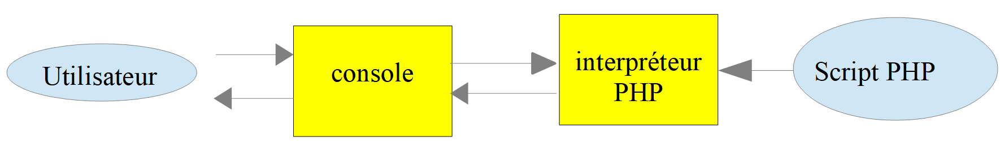
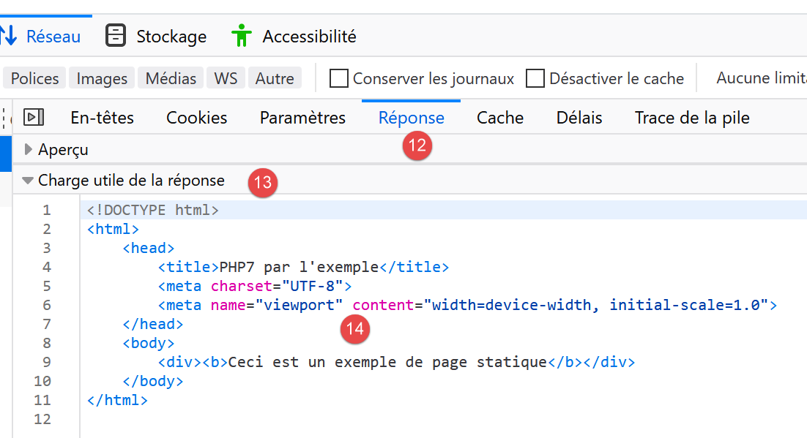
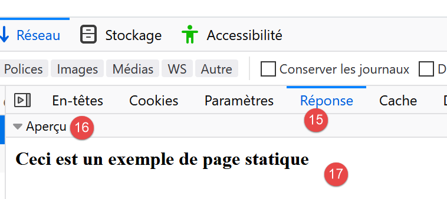
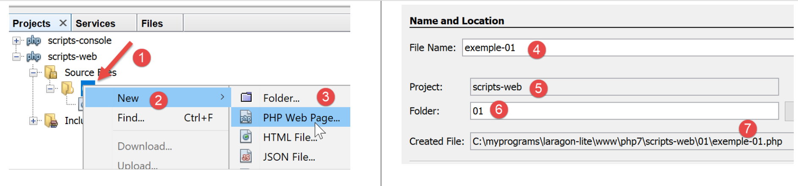
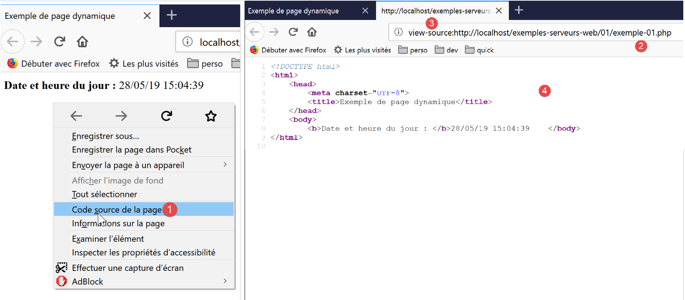
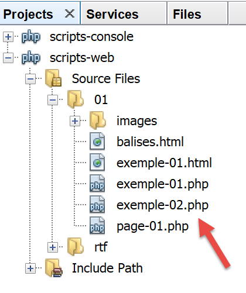
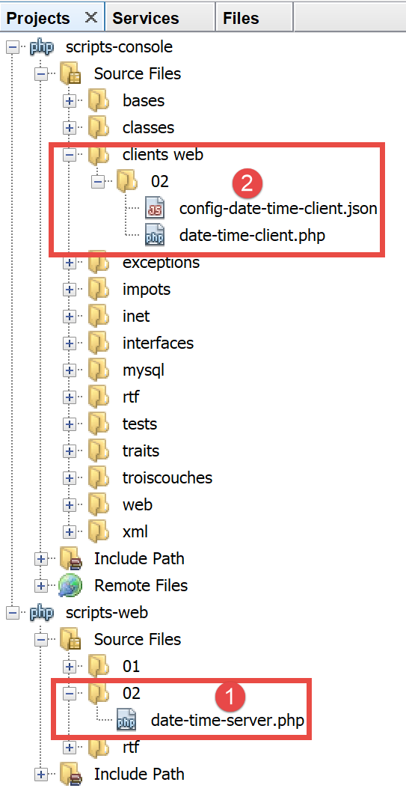
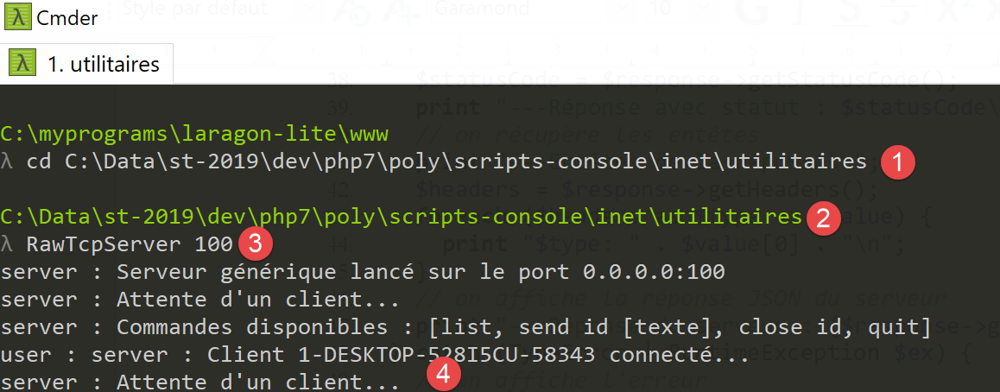
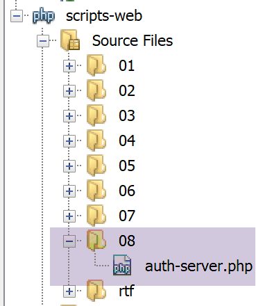
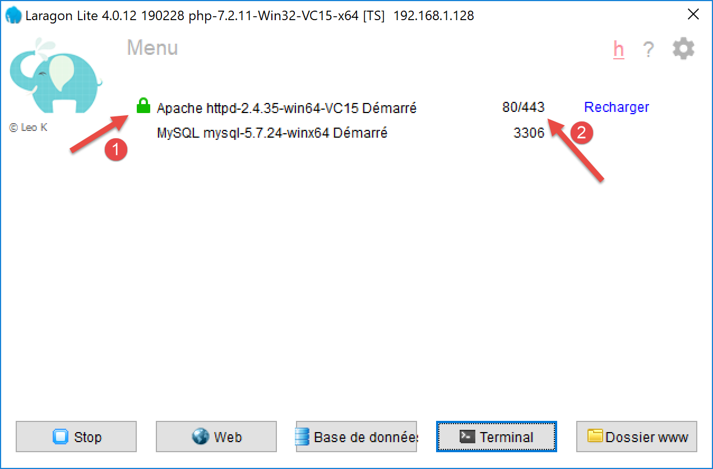

17. Servicios web
Nota: por servicio web se entiende aquí cualquier aplicación web que proporcione datos sin procesar consumidos por un cliente, un script de consola en los ejemplos que siguen. No nos interesa ninguna tecnología en particular, como REST (REpresentational State Transfer) o SOAP (Simple Object Access Protocol), por ejemplo, que proporcionan datos más o menos sin procesar en un formato bien definido. REST proporciona jSON, mientras que para SOAP es XML. Cada una de estas tecnologías describe con precisión la forma en que el cliente debe consultar al servidor y el formato que debe adoptar la respuesta de este. En este curso, seremos mucho más flexibles en cuanto a la naturaleza de la solicitud del cliente y la respuesta del servidor. Sin embargo, los scripts escritos y las herramientas utilizadas son similares a los de la tecnología REST.
17.1. Introducción
Dado que los programas PHP pueden ser ejecutados por un servidor WEB, dicho programa se convierte en un programa servidor capaz de atender a varios clients. Desde el punto de vista del cliente, llamar a un servicio web equivale a solicitar el URL de dicho servicio. El cliente puede estar escrito en cualquier lenguaje, en particular en PHP. En este último caso, se utilizan las funciones de red que acabamos de ver. Por otra parte, debemos saber «comunicarnos» con un servicio web, es decir, comprender el protocolo http de comunicación entre un servidor WEB y sus clients. Ese era el objetivo del párrafo anterior.
El cliente web descrito en el párrafo enlace nos ha permitido descubrir una parte del protocolo HTTP.

En su versión más simple, version, los intercambios entre el cliente y el servidor son los siguientes:
- el cliente abre una conexión con el puerto 80 del servidor web;
- realiza una solicitud relativa a un documento;
- el servidor web envía el documento solicitado y cierra la conexión;
- el cliente, a su vez, cierra la conexión;
El documento puede ser de diversa índole: un texto en formato HTML, una imagen, un vídeo… Puede tratarse de un documento existente (documento estático) o bien de un documento generado sobre la marcha por un script (documento dinámico). En este último caso, se habla de programación web. El script de generación dinámica de documentos puede estar escrito en diversos lenguajes: PHP, Python, Perl, Java, Ruby, C#, VB.net…
A continuación, utilizaremos scripts PHP para generar dinámicamente documentos de texto.

- en [1], el cliente establece una conexión con el servidor, solicita un script PHP y envía o no parámetros a dicho script;
- en [2], el servidor web ejecuta el script PHP mediante el intérprete PHP. El script genera un documento que se envía al cliente [3];
- el servidor cierra la conexión. El cliente hace lo mismo;
El servidor web puede procesar varios clients a la vez.
Con el paquete de software [Laragon], el servidor web es un servidor Apache, un servidor de código abierto de la Apache Foundation (http://www.apache.org/). En las siguientes aplicaciones, se debe iniciar [Laragon]:

Esto inicia el servidor web Apache, así como SGBD y MySQL.
Los scripts ejecutados por el servidor web se escribirán con la herramienta Netbeans. Hasta ahora hemos escrito scripts PHP ejecutados en un contexto de consola:

El usuario utiliza la consola para solicitar la ejecución de un script PHP y recibir los resultados.
En las aplicaciones cliente/servidor que veremos a continuación:
- el script del cliente se ejecuta en un contexto de consola;
- el script del servidor se ejecuta en un contexto web;

El script PHP del servidor no puede estar en cualquier lugar del sistema de archivos. De hecho, el servidor web busca en las ubicaciones especificadas por la configuración los documentos estáticos y dinámicos que se le solicitan. La configuración predeterminada de Laragon hace que los documentos se busquen en la carpeta <Laragon>/www, donde <Laragon> es la carpeta de instalación de Laragon. Así, si un cliente web solicita un documento D con la ruta URL [http://localhost/D], el servidor web le servirá el documento D de la ruta [<Laragon>/www/D].
En los ejemplos siguientes, colocaremos los scripts de servidor en la carpeta [www/php7/scripts-web]. Si un script de servidor se llama S.php, se solicitará al servidor web con el URL [http://localhost/php7/scripts-web/S.php]. A continuación, se le servirá el documento [<Laragon>/www/php7/scripts-web/S.php].

- en [1], la carpeta [<laragon>/www];
- en [2], el archivo [php7/scripts-web];
Para crear scripts de servidor con Netbeans, procederemos de la siguiente manera:

- en [1-2], creamos un nuevo proyecto
- en [3-4], tomamos la categoría [PHP] y el proyecto [PHP Application]

- en [5], el nombre del proyecto;
- en [6], la carpeta del proyecto en el sistema de archivos. Tenga en cuenta que esta se encuentra en la carpeta [<laragon>/www], donde debe estar;
- en [7-8], acepte los valores predeterminados propuestos;
- en [9-10], acepte los valores predeterminados propuestos. En [10], tenga en cuenta que el URL de los scripts que colocaremos en este proyecto comenzará por la ruta [http://localhost/php7/scripts-web/];

- en [11], se le ofrecen marcos web escritos en PHP. Estos marcos son indispensables en cuanto la aplicación web adquiere cierta envergadura;
- en [12], se pueden añadir bibliotecas PHP con la ayuda de la herramienta [Composer]. Hemos utilizado esta herramienta en dos ocasiones en una ventana [Terminal] de Laragon:
- para instalar la biblioteca [SwiftMailer], que permite enviar correos electrónicos;
- para instalar la biblioteca [php-mime-mail-parser], que permite leer correos electrónicos;
- en [13], una vez validado el asistente de creación del proyecto, este aparece en [13] en la pestaña de proyectos;
17.2. Creación de una página estática
Nota: Para continuar, es necesario que [Laragon] esté en ejecución.
Vamos a mostrar cómo crear una página estática HTML (HyperText Markup Language) utilizando Netbeans:

- en [1-5], creamos una carpeta llamada [01];


- en [6-12], creamos un archivo HTML [exemple-01.html];
El archivo [exemple-01.html] se genera ya rellenado de la siguiente manera (mayo de 2019):
<!DOCTYPE html>
<!--
To change this license header, choose License Headers in Project Properties.
To change this template file, choose Tools | Templates
and open the template in the editor.
-->
<html>
<head>
<title>TODO supply a title</title>
<meta charset="UTF-8">
<meta name="viewport" content="width=device-width, initial-scale=1.0">
</head>
<body>
<div>TODO write content</div>
</body>
</html>
Modifiquemos su contenido de la siguiente manera:
<!DOCTYPE html>
<html>
<head>
<title>PHP7 par l'exemple</title>
<meta charset="UTF-8">
<meta name="viewport" content="width=device-width, initial-scale=1.0">
</head>
<body>
<div><b>Ceci est un exemple de page statique</b></div>
</body>
</html>
Hemos cambiado el título de la página (línea 4) y su contenido (línea 9).
Ahora hagamos que el servidor Apache de Laragon muestre esta página HTML:

- en [1-2], hacemos que el servidor Apache de Laragon muestre la página;
- en [3], el URL de la página mostrada;
- en [4], el título que hemos modificado;
- en [5], el contenido que hemos modificado;
La página mostrada es una página estática: se puede cargar tantas veces como se quiera en el navegador (F5), siempre se muestra el mismo contenido.
La mayoría de los navegadores permiten acceder a los datos intercambiados entre el cliente y el servidor, los que se han descrito en el apartado «enlace». Con el navegador Firefox (mayo de 2019), hay que hacer F12 para acceder a estos datos:

Como se indica en [1], recarguemos la página (F5):

- en [2], el documento cargado por el navegador: lo seleccionamos;

- en [5], el documento a analizar está seleccionado;
- en [3-4], solicitamos ver los intercambios cliente/servidor;
- en [6], estos intercambios;

- en [7], se selecciona la pestaña de encabezados;
- en [8], el URL solicitado por el navegador;
- en [9], el comando enviado al servidor es [GET http://localhost/php7/scripts-web/01/exemple-01.html HTTP/1.1];
- en [10], los encabezados HTTP enviados a continuación por el navegador (el cliente);
- en [11], los encabezados HTTP de la respuesta del servidor;

- en [12-14], la respuesta del servidor enviada tras los encabezados HTTP;
- en [14], vemos que el navegador del cliente ha recibido la página HTML que hemos creado. A continuación, ha interpretado este código para mostrar lo siguiente:

17.3. Creación de una página dinámica en PHP
Ahora escribimos una página dinámica en PHP:


- en [1-8], creamos una página [exemple-01.php];
El archivo [exemple-01.php] se genera ya rellenado de la siguiente manera (mayo de 2019):
<!DOCTYPE html>
<!--
To change this license header, choose License Headers in Project Properties.
To change this template file, choose Tools | Templates
and open the template in the editor.
-->
<html>
<head>
<meta charset="UTF-8">
<title></title>
</head>
<body>
<?php
// introduce tu código aquí
?>
</body>
</html>
Modificamos el código anterior de la siguiente manera:
<!DOCTYPE html>
<html>
<head>
<meta charset="UTF-8">
<title>Exemple de page dynamique</title>
</head>
<body>
<?php
// hora: número de milisegundos entre el momento actual y el 01/01/1970
// formato de visualización de fecha y hora
// d: día en dos dígitos
// m: mes en dos dígitos
// y: año en dos dígitos
// H: hora 0,23
// I: minutos
// s: segundos
print "<b>Date et heure du jour : </b>" . date("d/m/y H:i:s", time());
?>
</body>
</html>
Comentarios
- línea 5: hemos cambiado el título de la página;
- línea 17: escribe la fecha y la hora actuales;
Básicamente, el script PHP anterior escribe la hora actual en la consola. Sin embargo, cuando lo ejecuta un servidor web, el flujo de salida de la instrucción [print], que normalmente se asocia a la consola de ejecución del script, se redirige aquí a la conexión que une el servidor con su cliente. Por lo tanto, en un contexto web, el script anterior envía la hora actual en forma de texto al cliente, en este caso un navegador.
Ejecutemos el script [exemple-01.php]:

- en [3], el URL solicitado al servidor web Apache;
- en [4], el título de la página que hemos cambiado;
- en [5], el contenido generado por la instrucción [print];
Aquí tenemos una página dinámica, ya que si recargamos la página varias veces en el navegador (F5), su contenido cambia (cambia la hora).
El navegador ha recibido un flujo HTML. Para conocerlo, hay que mostrar el código fuente de la página en el navegador:

- para ver el menú [1], hacer clic con el botón derecho del ratón en la página del navegador;
- en [2], el URL de la página [exemple-01.php] pero precedido por [view-source :] [3];
- en [4], el contenido HTML que el navegador ha mostrado;
Por lo tanto, hay que recordar que un script PHP destinado a ser ejecutado por un servidor web debe producir un flujo HTML.
Veamos ahora (F12) los encabezados HTTP enviados por el servidor al navegador cliente:

- en [3], un encabezado HTTP que no estaba presente cuando se solicitó la página estática. Este encabezado muestra que la respuesta del servidor fue generada por un script PHP;
Hemos visto que la respuesta (el flujo HTML en este caso) del servidor podía generarse mediante un script PHP. El script también puede generar los encabezados HTTP y prácticamente todos los elementos de la respuesta del servidor.
17.4. Fundamentos del lenguaje HTML
Este capítulo no se detendrá en la programación WEB en PHP. En el apartado enlace se desarrolla una aplicación web MVC. Este capítulo se centra más bien en los servicios web: páginas PHP que, a través de un servidor web, proporcionan datos destinados a otros clients PHP. No obstante, nos ha parecido útil ofrecer al lector algunos conceptos básicos de HTML.
Un navegador web puede mostrar diversos documentos, siendo el más habitual el documento HTML (HyperText Markup Language). Se trata de un texto formateado con etiquetas de la forma <etiqueta>texto</etiqueta>. Así, el texto <b>importante</b> mostrará el texto «importante» en negrita. Existen etiquetas que funcionan solas, como la etiqueta <hr/>, que muestra una línea horizontal. No repasaremos las etiquetas que se pueden encontrar en un texto HTML. Existen numerosos programas WYSIWYG que permiten crear una página WEB sin escribir una sola línea de código HTML. Estas herramientas generan automáticamente el código HTML a partir de un diseño creado con el ratón y controles predefinidos. De este modo, se puede insertar (con el ratón) una tabla en la página y, a continuación, consultar el código HTML generado por el software para descubrir las etiquetas que hay que utilizar para definir una tabla en una página WEB. No es más complicado que eso. Por otra parte, el conocimiento del lenguaje HTML es indispensable, ya que las aplicaciones web dinámicas deben generar ellas mismas el código HTML que se enviará a los clients WEB. Este código se genera mediante un programa y, por supuesto, hay que saber qué hay que generar para que el cliente obtenga la página web que desea.
En resumen, no es necesario conocer todo el lenguaje HTML para iniciarse en la programación web. Sin embargo, este conocimiento es necesario y se puede adquirir mediante el uso de programas de creación de páginas WYSIWYG, como WEB, DreamWeaver y muchos otros. Otra forma de descubrir las sutilezas del lenguaje HTML es navegar por la web y visualizar el código fuente de las páginas que presentan características interesantes y aún desconocidas para usted.
Consideremos el siguiente ejemplo, que presenta algunos elementos que se pueden encontrar en un documento WEB, tales como:
- una tabla;
- una imagen;
- un enlace.

Un documento HTML tiene la siguiente estructura general:
<html> <head> <title>Un título</title> ... </head> <atributos del cuerpo> ... </body></html>
Todo el documento está enmarcado por las etiquetas <html>…</html>. Se compone de dos partes:
- <head>…</head>: es la parte no visible del documento. Proporciona información al navegador que va a mostrar el documento. A menudo se encuentra aquí la etiqueta <title>…</title>, que establece el texto que se mostrará en la barra de título del navegador. En ella pueden encontrarse otras etiquetas, en particular las que definen las palabras clave del documento, palabras clave que posteriormente utilizan los motores de búsqueda. En esta parte también pueden encontrarse scripts, escritos con mayor frecuencia en javascript o vbscript, que serán ejecutados por el navegador.
- <body atributos>…</body>: es la parte que mostrará el navegador. Las etiquetas HTML contenidas en esta parte indican al navegador la forma visual «deseada» para el documento. Cada navegador interpretará estas etiquetas a su manera. Por lo tanto, dos navegadores pueden mostrar de forma diferente un mismo documento web. Esto suele ser uno de los quebraderos de cabeza de los diseñadores web.
El código HTML de nuestro documento de ejemplo es el siguiente:
<!DOCTYPE html>
<html xmlns="http://www.w3.org/1999/xhtml">
<head>
<meta http-equiv="Content-Type" content="text/html; charset=utf-8" />
<title>Quelques balises HTML</title>
</head>
<body style="background-image: url(images/standard.jpg)">
<h1 style="text-align: left">Quelques balises HTML</h1>
<hr />
<table border="1">
<thead>
<tr>
<th>Colonne 1</th>
<th>Colonne 2</th>
<th>Colonne 3</th>
</tr>
</thead>
<tbody>
<tr>
<td>cellule(1,1)</td>
<td style="text-align: center;">cellule(1,2)</td>
<td>cellule(1,3)</td>
</tr>
<tr>
<td>cellule(2,1)</td>
<td>cellule(2,2)</td>
<td>cellule(2,3</td>
</tr>
</tbody>
</table>
<br/><br/>
<table border="0">
<tr>
<td>Une image</td>
<td>
<img border="0" src="images/cerisier.jpg"/></td>
</tr>
<tr>
<td>Le site de Polytech'Angers</td>
<td><a href="http://www.polytech-angers.fr/fr/index.html">ici</a></td>
</tr>
</table>
</body>
</html>
Etiquetas y ejemplos HTML | |
<title>Algunas etiquetas HTML</title> (línea 5) El texto [Quelques balises HTML] aparecerá en la barra de título del navegador que muestre el documento | |
<hr />: muestra una línea horizontal (línea 10) | |
<table atributos>….</table>: para definir la tabla (líneas 12, 32) <thead>…</thead>: para definir los encabezados de las columnas (líneas 13, 19) <tbody>…</tbody>: para definir el contenido de la tabla (líneas 20, 31) <tr atributos>…</tr>: para definir una fila (líneas 21, 25) <td atributos>…</td>: para definir una celda (línea 22) ejemplos: <table border="1">…</table>: el atributo border define el grosor del borde de la tabla <td style="text-align: center;">celda(1,2)</td> (línea 23): define una celda cuyo contenido será celda(1,2). Este contenido se centrará horizontalmente (text-align: center). | |
<img border="0" src="images/cerisier.jpg"/> (línea 38): define una imagen sin borde (border=0") cuyo archivo de origen es [images/cerisier.jpg] en el servidor web (src="images/cerisier.jpg"). Este enlace se encuentra en un documento web obtenido con el URL http://localhost/php7/scripts-web/01/balises.html. Por lo tanto, el navegador solicitará el URL http://localhost/php7/scripts-web/01/images/cerisier.jpg para obtener la imagen a la que se hace referencia aquí. | |
<a href="http://www.polytech-angers.fr/fr/index.html">aquí</a> (línea 42): hace que el texto aquí sirva de enlace hacia el URL http://www.polytech-angers.fr/fr/index.html. | |
<body style="background-image: url(images/standard.jpg)"> (línea 8): indica que la imagen que debe servir como fondo de página se encuentra en la ruta URL [images/standard.jpg] del servidor WEB. En el contexto de nuestro ejemplo, el navegador solicitará la ruta URL http://localhost/php7/scripts-web/01/images/standard.jpg para obtener esta imagen de fondo. |
En este sencillo ejemplo vemos que, para construir el documento completo, el navegador debe realizar tres solicitudes al servidor:
- http://localhost/php7/scripts-web/01/images/balises.html para obtener el código fuente HTML del documento
- http://localhost/php7/scripts-web/01/images/cerisier.jpg para obtener la imagen cerisier.jpg
- http://localhost/php7/scripts-web/01/images/standard.jpg para obtener la imagen de fondo standard.jpg
Esto es lo que muestran los intercambios de red entre el cliente y el servidor (F12 en el navegador):

- en [3-5], se ven las tres solicitudes realizadas por el navegador;
17.5. Dinamizar una página estática
Veamos cómo podemos dinamizar la página HTML [exemple-01.html]. Copiamos el contenido

Hemos copiado el contenido de [exemple-01.html] en el archivo [page-01.php]. Si ejecutamos [2], este script web, obtenemos lo siguiente en el navegador:

- en [3], el URL solicitado;
- en [4], el título de la página;
- en [5], el contenido de la página;
Si se muestra el código recibido por el navegador, se encuentra lo siguiente:

- en [7], tenemos el código HTML colocado en el script [exemple-01.php]
El intérprete PHP interpretó el script [page-01.php] y generó el mismo flujo HTML que la página estática [exemple-01.html]. En el script [page-01.php] no había ningún PHP, solo HTML. De este modo, aprendemos una cosa: cuando el intérprete PHP encuentra HTML en un script PHP, no lo modifica y lo envía tal cual al cliente.
Ahora pongamos algunas instrucciones PHP en el script [page-01.php] para que el intérprete PHP tenga algo que hacer:
<!DOCTYPE html>
<html>
<head>
<title><?php print $page->title ?></title>
<meta charset="UTF-8">
<meta name="viewport" content="width=device-width, initial-scale=1.0">
</head>
<body>
<div><b><?php print $page->contents ?></b></div>
</body>
</html>
En las líneas 4 y 9 hemos puesto código PHP para generar dinámicamente el título y el contenido de la página. Partimos aquí de la hipótesis de que la variable [$page] es un objeto que contiene los datos que se van a mostrar.
Si ejecutamos este nuevo código, obtenemos el siguiente resultado en el navegador:

- en [1], el URL solicitado;
- en [2], no se ha podido mostrar el título de la página porque la variable [$page] no estaba definida;
- en [3], lo mismo ocurre con el contenido;
Ahora, escribamos el siguiente script web [exemple-02.php]:

El script [exemple-02.php] será el siguiente:
<?php
// se definen los elementos de la página que se van a mostrar
$page=new \stdclass();
$page->title="Un nouveau titre";
$page->contents="Un nouveau contenu généré dynamiquement";
// se muestra [page-01]
require_once "page-01.php";
- líneas 4-6: se define el objeto [$page];
- línea 8: se incluye el script [page-01.php]. El código de este script se interpretará a su vez:
- la variable [$page] ya está definida y el intérprete PHP la utilizará;
- el código HTML de [page-01.php] se enviará tal cual al cliente;
- los resultados de las operaciones PHP y [print] se incluirán en el flujo de texto enviado al cliente;
Ahora, si ejecutamos el script web [exemple-02.php], obtenemos lo siguiente en el navegador:

Si visualizamos el contenido de texto recibido por el navegador:

- los códigos PHP que estaban en [2] y [3] han sido sustituidos por los resultados de los dos comandos [print];
De este ejemplo, hay que destacar dos cosas:
- las páginas HTML destinadas al navegador pueden aislarse en scripts PHP que contengan únicamente este código HTML y algunas partes dinámicas generadas por el código PHP. Debe haber el menor número posible de PHP en estas páginas;
- toda la lógica que genera los datos dinámicos incluidos en las páginas HTML debe aislarse en scripts PHP puros, que no contengan ningún código de presentación de las páginas (HTML, CSS, Javascript…);
Esto permite una separación de tareas:
- la tarea de crear las páginas web que se van a mostrar (HTML, CSS, Javascript…);
- la tarea de la lógica de la aplicación web que estamos construyendo. Esta lógica se podrá implementar con una arquitectura de tres capas, exactamente igual que hicimos con los scripts de consola;
A continuación, vamos a crear scripts web específicos;
- Estos solo enviarán datos al cliente y ningún elemento decorativo (HTML, CSS, Javascript). Por lo tanto, serán servidores de datos más que páginas web;
- los clients de estos scripts web serán scripts de consola que se encargarán de recuperar los datos enviados por el servidor y de procesarlos;
17.6. Aplicación cliente/servidor de fecha/hora
Ahora nos situamos en la siguiente configuración:

Vamos a escribir:
- un script web [1] que envía a su cliente la fecha y la hora actuales;
- un script de consola [2] que será el cliente del script web: recuperará la fecha y la hora enviadas por el script web y las mostrará en la consola;

- en [1], el script web [date-time-server.php];
- en [2], el script de consola [date-time-client], cliente del script web;
17.6.1. El script del servidor
Ya hemos escrito un script web que genera la fecha y la hora actuales en el párrafo enlace. Se trataba del siguiente script [exemple-01.php]:
<!DOCTYPE html>
<html>
<head>
<meta charset="UTF-8">
<title>Exemple de page dynamique</title>
</head>
<body>
<?php
// time: número de milisegundos desde el 01/01/1970
// formato de visualización de fecha y hora
// d: día en 2 dígitos
// m: mes en dos dígitos
// y: año en dos dígitos
// H: hora 0,23
// i: minutos
// s: segundos
print "<b>Date et heure du jour : </b>" . date("d/m/y H:i:s", time());
?>
</body>
</html>
Dijimos que íbamos a escribir servidores de datos: datos sin formato HTML. El script de servidor [date-time-server.php] será entonces el siguiente:
<?php
// se establece el encabezado HTP [Content-Type]
header('Content-Type: text/plain; charset=UTF-8');
//
// se envía la fecha y la hora
// tiempo: número de milisegundos desde el 01/01/1970
// formato de visualización de fecha y hora
// d: día en 2 dígitos
// m: mes en dos dígitos
// y: año en dos dígitos
// H: hora 0,23
// i: minutos
// s: segundos
print date("d/m/y H:i:s", time());
- línea 4: establecemos el encabezado HTTP [Content-Type] que indica al cliente la naturaleza del documento que va a recibir. Hasta ahora, el [Content-Type] era: [Content-Type: text/html; charset=UTF-8]. Aquí le indicamos al cliente que el documento es texto sin formato HTML. Esto no es importante para nuestro cliente de consola, que no intentará utilizar este encabezado. Es más importante para los navegadores clients, que sí utilizan este encabezado;
Ejecutemos este script de servidor:

Si examinamos en el navegador la respuesta del servidor (F12), vemos en [5] el encabezado HTTP que el script del servidor ha establecido y en [8], el documento de texto recibido;

17.6.2. El script de cliente
En el apartado «enlace» hemos desarrollado varios clients y HTTP. Podríamos utilizarlos para recuperar el documento de texto enviado por el script de servidor [date-time-server.php]. No lo vamos a hacer. Al igual que hicimos con los protocolos SMTP y IMAP, vamos a utilizar una biblioteca de terceros, concretamente el componente [HttpClient] del framework Symfony [https://symfony.com/doc/master/components/http_client.html].
Al igual que con las dos bibliotecas anteriores, utilizamos la herramienta [Composer] para instalar el componente [HttpClient] de Symfony. En una ventana [Terminal] de Laragon (véase el párrafo del enlace), escribimos el siguiente comando:

- en [3], compruebe que se encuentra en la carpeta [<laragon>/www/], donde <laragon> es la carpeta de instalación de Laragon;
- en [4], el comando [composer], que instala la biblioteca [HttpClient] de Symfony;
- en [5], no se instala nada porque la biblioteca [HttpClient] ya estaba instalada en este equipo;
- en [6-7], aparecen nuevas carpetas en [<laragon>/www/vendor/symfony];
En lugar de [5], debería tener algo como lo siguiente:
C:\myprograms\laragon-lite\www
? composer require symfony/http-client
Using version ^4.3 for symfony/http-client
./composer.json has been updated
Loading composer repositories with package information
Updating dependencies (including require-dev)
Package operations: 4 installs, 0 updates, 0 removals
- Installing symfony/polyfill-php73 (v1.11.0): Downloading (100%)
- Installing symfony/http-client-contracts (v1.1.1): Downloading (100%)
- Installing psr/log (1.1.0): Loading from cache
- Installing symfony/http-client (v4.3.0): Downloading (100%)
Writing lock file
Generating autoload files
Asegúrese de que la carpeta [<laragon>/www/vendor] forma parte de la rama [Include Path] de su proyecto (véase el párrafo del enlace):

Una vez hecho esto, podemos escribir el script de consola [date-time-client.php]:

El script de consola [date-time-client.php] utilizará el siguiente archivo jSON [config-date-time-client.json]:
- línea 2: el URL del script del servidor;
El script de cliente [date-time-client.php] será el siguiente:
<?php
// cliente del servicio de fecha/hora
//
// gestión de errores
//ini_set("error_reporting", E_ALL & ~ E_WARNING & ~E_DEPRECATED & ~E_NOTICE);
//ini_set("display_errors", "off");
//
// dependencias
require_once 'C:/myprograms/laragon-lite/www/vendor/autoload.php';
use Symfony\Component\HttpClient\HttpClient;
// la configuración del cliente
const CONFIG_FILE_NAME = "config-date-time-client.json";
// se recupera la configuración
if (!file_exists(CONFIG_FILE_NAME)) {
print "Le fichier de configuration [" . CONFIG_FILE_NAME . "] n'existe pas\n";
exit;
}
if (!$config = \json_decode(\file_get_contents(CONFIG_FILE_NAME), true)) {
print "Erreur lors de l'exploitation du fichier de configuration jSON [" . CONFIG_FILE_NAME . "]\n";
exit;
}
// se crea un cliente HTTP
$httpClient = HttpClient::create();
try {
// se realiza la solicitud
$response = $httpClient->request('GET', $config['url']);
// estado de la respuesta
$statusCode = $response->getStatusCode();
print "---Réponse avec statut : $statusCode\n";
// se recuperan los encabezados
print "---Entêtes de la réponse\n";
$headers = $response->getHeaders();
foreach ($headers as $type => $value) {
print "$type: " . $value[0] . "\n";
}
// se recupera el cuerpo de la respuesta
$content = $response->getContent();
// se muestra
print "---Réponse du serveur : [$content]\n";
} catch (TypeError | RuntimeException $ex) {
// se muestra el error
print "Erreur de communication avec le serveur : " . $ex->getMessage() . "\n";
exit;
}
Comentarios
- línea 10: al igual que hicimos con las bibliotecas anteriores, cargamos el archivo [<laragon>/www/vendor/autoload.php];
- línea 11: declaramos la clase [HttpClient] que vamos a utilizar;
- líneas 13-24: recuperamos la configuración del script en el diccionario [$config];
- línea 27: creamos un objeto de tipo [HttpClient];
- línea 31: solicitamos el URL del script del servidor mediante un comando GET: [GET URL HTTTP/1.1]. Esta operación es asíncrona. La ejecución continúa en la línea 33 sin esperar a que se reciba la respuesta;
- línea 33: se solicita el estado de la respuesta. Este estado se encuentra en el primer encabezado HTTP devuelto por el servidor. Así, si este encabezado es [HTTP/1.1 200 OK], el estado de la respuesta es 200. Esta operación es bloqueante: solo se vuelve a ella cuando el cliente ha recibido toda la respuesta del servidor;
- línea 37: se solicitan los encabezados HTTP de la respuesta;
- línea 42: se solicita el documento devuelto por el servidor: sabemos que este documento es, en este caso, un texto.
- líneas 45-49: en caso de error, se muestra el mensaje de error;
Al ejecutar el script de cliente (es necesario que Laragon esté en ejecución para que se pueda acceder al script de servidor), se obtiene el siguiente resultado en la consola:
Se recuperan correctamente la fecha y la hora actuales en la línea 8.
Quizá nos interese saber qué ha enviado el script de cliente al servidor. Para ello, utilizaremos nuestro servidor genérico TCP (véase el párrafo del enlace):

- en [1], la carpeta de utilidades;
- en [2], el servidor TCP se inicia en el puerto 100;
- en [3], espera de un comando introducido con el teclado;
Modificamos el archivo de configuración del script [date-time-client.php]:
{
"url": "http://localhost:100/php7/scripts-web/02/date-time-server.php"
}
Esta vez, el cliente se conecta al servidor [localhost] en el puerto 100. Por lo tanto, se solicitará nuestro servidor genérico TCP. Cuando ejecutamos el script de consola [date-time-client.php], la consola del servidor genérico TCP evoluciona de la siguiente manera:

- en [3], el comando HTTP GET creado por el script de cliente;
- en [4], la firma del script de consola;
- en [5], la respuesta del servidor al script del cliente. Cabe señalar que esta no es una respuesta HTTP válida:
- debería haber encabezados HTTP;
- luego una línea en blanco;
- luego el documento de texto enviado al cliente;
- en [6], se cierra la comunicación con el script del cliente para que este detecte que ha recibido la respuesta completa;
En el script del cliente, se muestra lo siguiente en la consola:

- en [7], lo que ha recibido el cliente Symfony;
17.6.3. El script del servidor – version 2
Por defecto, las funciones PHP para escribir un script web no están orientadas a objetos. En el lado del servidor, esto nos lleva a mezclar clases y funciones PHP clásicas. Para lograr una escritura más homogénea, utilizaremos la biblioteca [HttpFoundation] del framework Symfony. Esta ha encapsulado todas las funciones PHP clásicas para un servicio web en un sistema de clases e interfaces. La documentación de la biblioteca está disponible en URL [https://symfony.com/doc/current/components/http_foundation.html] (mayo de 2019).
Para instalar la biblioteca, procedemos de la siguiente manera en un terminal Laragon (véase el párrafo del enlace):

- [2-3]: asegúrese de estar en la carpeta [<laragon>/www];
- [4]: el comando [composer] que instalará la biblioteca [HttpFoundation];
- [5]: en este ejemplo, la biblioteca ya estaba instalada;
En la primera instalación, debería obtener registros de consola similares a estos:
C:\myprograms\laragon-lite\www
? composer require symfony/http-foundation
Using version ^4.3 for symfony/http-foundation
./composer.json has been updated
Loading composer repositories with package information
Updating dependencies (including require-dev)
Package operations: 2 installs, 0 updates, 0 removals
- Installing symfony/mime (v4.3.0): Downloading (100%)
- Installing symfony/http-foundation (v4.3.0): Downloading (100%)
Writing lock file
Generating autoload files
El segundo version del servidor web [date-time-server-2.php] es el siguiente:
<?php
// uso de las bibliotecas de Symfony
// dependencias
require_once 'C:/myprograms/laragon-lite/www/vendor/autoload.php';
use Symfony\Component\HttpFoundation\Response;
// se establece el encabezado Content-Type
$response=new Response();
$response->headers->set("content-type","text/plain");
$response->setCharset("utf-8");
// se establece el contenido de la respuesta
//
// enviamos la fecha y la hora
// tiempo: número de milisegundos desde el 01/01/1970
// formato de visualización de fecha y hora
// d: día en dos dígitos
// m: mes en dos dígitos
// y: año en dos dígitos
// H: hora 0,23
// i: minutos
// s: segundos
$response->setContent(date("d/m/y H:i:s", time()));
// se envía la respuesta
$response->send();
Comentarios
- línea 7: la clase [Response] de la biblioteca [HttpFoundation] de Symfony gestiona la totalidad de la respuesta a clients del servicio web;
- línea 10: creación de una instancia de la clase [Response];
- línea 11: se indica que la respuesta es de tipo [text/plain];
- línea 12: la respuesta es texto UTF-8;
- línea 25: se establece el documento de la respuesta, tal y como lo ha solicitado el cliente;
- línea 28: se envía la respuesta al cliente;
17.6.4. El script del cliente – version 2
El script del cliente no cambia. Solo se modifica su archivo de configuración [config-date-time-client.json]:
Los resultados son los mismos que en el version 1.
17.7. Un servidor de datos jSON
La respuesta de un script web puede estar compuesta por varios datos que se pueden agrupar en tablas y objetos. El script puede entonces enviar estos diversos elementos dentro de una cadena jSON que el cliente descodificará.

17.7.1. El script del servidor
El script [json-server.php] utiliza la siguiente clase [Personne]:
<?php
namespace Modèles;
class Personne implements \JsonSerializable {
// atributos
private $nom;
private $prénom;
private $âge;
// conversión de una tabla asociativa a un objeto [Personne]
public function setFromArray(array $assoc): Personne {
// se inicializa el objeto actual con el array asociativo
foreach ($assoc as $attribute => $value) {
$this->$attribute = $value;
}
// resultado
return $this;
}
// getters y setters
public function getNom() {
return $this->nom;
}
public function getPrénom() {
return $this->prénom;
}
public function setNom($nom) {
$this->nom = $nom;
return $this;
}
public function setPrénom($prénom) {
$this->prénom = $prénom;
return $this;
}
public function getÂge() {
return $this->âge;
}
public function setÂge($âge) {
$this->âge = $âge;
return $this;
}
// toString
public function __toString(): string {
return "Personne [$this->prénom, $this->nom, $this->âge]";
}
// implementa la interfaz JsonSerializable
public function jsonSerialize(): array {
// se devuelve una tabla asociativa con los atributos del objeto como claves
// esta tabla podrá codificarse posteriormente en jSON
return get_object_vars($this);
}
// conversión de un jSON a un objeto [Personne]
public static function jsonUnserialize(string $json): Personne {
// se crea una persona a partir de la cadena jSON
return (new Personne())->setFromArray(json_decode($json, true));
}
}
Comentarios
- línea 5: la clase implementa la interfaz PHP [JsonSerializable]. Esto le obliga a implementar el método [jsonSerialize] de las líneas 55-59. El método debe devolver una matriz asociativa que deberá ser serializada en jSON. Cuando se utiliza la expresión [json_encode($personne)], la función [json_encode] comprueba si la clase [Personne] implementa la interfaz [JsonSerializable]. Si es así, la expresión se convierte en [json_encode($personne→serialize())];
- líneas 12-19: la clase no tiene constructor, sino un inicializador. La clase [Personne] puede entonces instanciarse mediante la expresión [(new Personne())→setFromArray($array)]. Se pueden tener varios tipos de inicializadores, mientras que solo se puede tener un constructor. Estos inicializadores permiten diversos modos de instanciación del tipo [(new Personne())→initialiseuri(…)];
- líneas 62-65: la función estática [jsonUnserialize] permite crear un objeto [Personne] a partir de su cadena jSON;
El script [json-server.php] será el siguiente:
<?php
// dependencias
require_once __DIR__ . "/Personne.php";
use \Modèles\Personne;
require_once 'C:/myprograms/laragon-lite/www/vendor/autoload.php';
use \Symfony\Component\HttpFoundation\Response;
// se establece el encabezado Content-Type y la biblioteca de caracteres utilizada
$response = new Response();
$response->headers->set("content-type", "application/json");
$response->setCharset("utf-8");
// se crea un objeto Persona
$personne = (new Personne())->setFromArray([
"nom" => "de la Hûche",
"prénom" => "jean-paul",
"âge" => 27]);
// una tabla asociativa
$assoc = ["attr1" => "value1",
"attr2" => [
"prenom" => "Jean-Paul",
"nom" => "de la Hûche"
]
];
// el contenido de la respuesta es jSON
$response->setContent(json_encode([$personne, $assoc]));
// envío de la respuesta
$response->send();
Comentarios
- líneas 4-5: se importa la clase [Personne];
- línea 11: se indica que el documento será de tipo [application/json]. Al recibir este encabezado, los navegadores mostrarán un formato de la cadena jSON en lugar de mostrar texto sin formato;
- línea 12: la cadena jSON contendrá caracteres UTF-8;
- líneas 15-18: se crea un objeto [Personne];
- líneas 20-25: se crea una tabla asociativa de dos niveles;
- línea 27: se envía al cliente la cadena jSON de una matriz:
- el elemento [$personne] se serializará en jSON gracias a su método [jsonSerialize];
- el elemento [$assoc] se serializará de forma nativa como jSON;
Si se ejecuta este script de servidor (Laragon debe estar en ejecución), se obtiene la siguiente respuesta en un navegador:


Comentarios
- en [2], la respuesta jSON formateada;
- en [4], la respuesta jSON sin formato. Cabe destacar la codificación de los caracteres acentuados;
- en [6], es el tipo de contenido [application/json] enviado por el servidor lo que ha llevado al navegador a aplicar este formato;
17.7.2. El cliente

El cliente [json-client.php] está configurado por el siguiente archivo jSON [config-json-client.json]:
El script [json-client.php] es el siguiente:
<?php
// cliente de un servicio jSON
//
// gestión de errores
//ini_set("error_reporting", E_ALL & ~ E_WARNING & ~E_DEPRECATED & ~E_NOTICE);
//ini_set("display_errors", "off");
//
// dependencias
require_once 'C:/myprograms/laragon-lite/www/vendor/autoload.php';
use Symfony\Component\HttpClient\HttpClient;
require_once __DIR__ . "/Personne.php";
use \Modèles\Personne;
// la configuración del cliente
const CONFIG_FILE_NAME = "config-json-client.json";
// se recupera la configuración
if (!file_exists(CONFIG_FILE_NAME)) {
print "Le fichier de configuration [" . CONFIG_FILE_NAME . "] n'existe pas\n";
exit;
}
if (!$config = \json_decode(\file_get_contents(CONFIG_FILE_NAME), true)) {
print "Erreur lors de l'exploitation du fichier de configuration jSON [" . CONFIG_FILE_NAME . "]\n";
exit;
}
// se crea un cliente HTTP
$httpClient = HttpClient::create();
try {
// se realiza la solicitud
$response = $httpClient->request('GET', $config['url']);
// estado de la respuesta
$statusCode = $response->getStatusCode();
print "---Réponse avec statut : $statusCode\n";
// se recuperan los encabezados
print "---Entêtes de la réponse\n";
$headers = $response->getHeaders();
foreach ($headers as $type => $value) {
print "$type: " . $value[0] . "\n";
}
// se recupera el cuerpo jSON de la respuesta
list($personne, $assoc) = json_decode($response->getContent(), true);
// se instancia una persona a partir de la tabla de sus atributos
$personne = (new Personne())->setFromArray($personne);
// se muestra la respuesta del servidor
print "---Réponse du serveur\n";
print "$personne\n";
print "tableau=" . json_encode($assoc, JSON_UNESCAPED_UNICODE) . "\n";
} catch (TypeError | RuntimeException $ex) {
// se muestra el error
print "Erreur de communication avec le serveur : " . $ex->getMessage() . "\n";
}
Comentarios
- líneas 12-13: importación de la clase [Personne];
- línea 30: creación del cliente HTTP;
- línea 44: se decodifica la cadena jSON enviada por el servidor. Sabemos que lo que se ha codificado es una matriz de dos elementos que contiene dos matrices asociativas;
- línea 46: se crea un objeto [Personne] para mostrarlo a continuación en la línea 49;
- línea 50: se muestra la segunda matriz asociativa. La instrucción [print] no sabe mostrar matrices. Por lo tanto, se transforma esta en la cadena jSON. Para que los caracteres acentuados se muestren correctamente, hay que establecer el segundo parámetro [JSON_UNESCAPED_UNICODE]. Hemos visto que, efectivamente, los caracteres acentuados están codificados en la cadena jSON;
La ejecución del script de cliente da los siguientes resultados:
---Respuesta con estado: 200
---Encabezados de la respuesta
date: Sun, 02 Jun 2019 09:56:29 GMT
server: Apache/2.4.35 (Win64) OpenSSL/1.1.0i PHP/7.2.11
x-powered-by: PHP/7.2.11
cache-control: no-cache, private
content-length: 143
connection: close
content-type: application/json
---Respuesta del servidor
Personne [jean-paul, de la Hûche, 27]
tableau={"attr1":"value1","attr2":{"prenom":"Jean-Paul","nom":"de la Hûche"}}
En las líneas 11 y 12, se han recuperado correctamente los caracteres acentuados.
17.8. Recuperación de las variables de entorno del servicio web
Un script de servidor se ejecuta en un entorno web que puede conocer. Este entorno se almacena en el diccionario $_SERVER, una variable global de PHP. Si utilizamos la biblioteca [HttpFoundation], este entorno se encontrará en el campo [Request→server], donde [Request] es la solicitud HTTP procesada por el script web.
17.8.1. El script del servidor
Escribimos una aplicación de servidor que envía a su clients su entorno de ejecución.

El script web [env-server.php] es el siguiente:
<?php
// dependencias
require_once 'C:/myprograms/laragon-lite/www/vendor/autoload.php';
use \Symfony\Component\HttpFoundation\Response;
use Symfony\Component\HttpFoundation\Request;
// se recupera la solicitud
$request = Request::createFromGlobals();
// se elabora la respuesta
$response = new Response();
// el contenido de la respuesta es json utf-8
$response->headers->set("content-type", "application/json");
$response->setCharset("utf-8");
// se fija el contenido jSON de la respuesta
$response->setContent(json_encode($request->server->all()));
// envío de la respuesta
$response->send();
- línea 9: recuperamos el objeto de tipo [Request] que encapsula toda la información disponible sobre la solicitud HTTP recibida por el script web, así como sobre su entorno de ejecución;
- líneas 13-14: se enviará texto sin formato con caracteres UTF-8 al cliente;
- línea 16: la información enviada al cliente será una cadena de caracteres obtenida mediante la serialización jSON del objeto [$request→server→all()]: [$request→server] representa el entorno de ejecución del script web. Se trata de un objeto de tipo [ServerBag], una especie de diccionario. [$request→server→all()] es, por su parte, un diccionario propiamente dicho, el del contenido de [ServerBag];
- línea 18: se envía la información;
Si se ejecuta este script desde Netbeans, el navegador muestra la siguiente página:

- en [2], las diferentes claves del diccionario del entorno;
- en [3], los valores de estas claves;
17.8.2. El script de cliente

El script de cliente [env-client.php] se configura mediante el siguiente archivo jSON [config-env-client.json]:
El script de cliente [env-client.php] es el siguiente:
<?php
// entorno de un script de servidor
//
// gestión de errores
//ini_set("error_reporting", E_ALL & ~ E_WARNING & ~E_DEPRECATED & ~E_NOTICE);
//ini_set("display_errors", "off");
//
// dependencias
require_once 'C:/myprograms/laragon-lite/www/vendor/autoload.php';
use Symfony\Component\HttpClient\HttpClient;
// la configuración del cliente
const CONFIG_FILE_NAME = "config-env-client.json";
// se recupera la configuración
if (!file_exists(CONFIG_FILE_NAME)) {
print "Le fichier de configuration [" . CONFIG_FILE_NAME . "] n'existe pas\n";
exit;
}
if (!$config = \json_decode(\file_get_contents(CONFIG_FILE_NAME), true)) {
print "Erreur lors de l'exploitation du fichier de configuration jSON [" . CONFIG_FILE_NAME . "]\n";
exit;
}
// se crea un cliente HTTP
$httpClient = HttpClient::create();
try {
// se envía la solicitud al servidor
$response = $httpClient->request('GET', $config['url']);
// estado de la respuesta
$statusCode = $response->getStatusCode();
print "---Réponse avec statut : $statusCode\n";
// se recuperan los encabezados
print "---Entêtes de la réponse\n";
$headers = $response->getHeaders();
foreach ($headers as $type => $value) {
print "$type: " . $value[0] . "\n";
}
// se muestra la respuesta del servidor
print "---Réponse du serveur\n";
$env = json_decode($response->getContent());
foreach ($env as $key => $value) {
print "[$key]=>$value\n";
}
} catch (TypeError | RuntimeException $ex) {
// se muestra el error
print "Erreur de communication avec le serveur : " . $ex->getMessage() . "\n";
}
Comentarios
- línea 42: se deserializa la respuesta jSON del servidor. Se obtiene una tabla asociativa;
- líneas 43-45: se muestran todos los valores de esta tabla asociativa;
Se obtiene el siguiente resultado en la consola:
---Respuesta con estado: 200
---Encabezados de la respuesta
date: Sun, 02 Jun 2019 17:35:50 GMT
server: Apache/2.4.35 (Win64) OpenSSL/1.1.0i PHP/7.2.11
x-powered-by: PHP/7.2.11
cache-control: no-cache, private
content-length: 1505
connection: close
content-type: application/json
---Respuesta del servidor
[HTTP_HOST]=>localhost
[HTTP_USER_AGENT]=>Symfony HttpClient/Curl
[HTTP_ACCEPT_ENCODING]=>deflate, gzip
[PATH]=>C:\Program Files (x86)\Mail Enable\BIN;C:\windows\system32;C:\windows;C:\windows\System32\Wbem;C:\windows\System32\WindowsPowerShell\v1.0\;C:\windows\System32\OpenSSH\;C:\Program Files\dotnet\;C:\Program Files\Microsoft SQL Server\130\Tools\Binn\;C:\Program Files (x86)\Mail Enable\BIN64;C:\Users\serge\AppData\Local\Microsoft\WindowsApps;;C:\myprograms\Microsoft VS Code\bin
[SystemRoot]=>C:\windows
[COMSPEC]=>C:\windows\system32\cmd.exe
[PATHEXT]=>.COM;.EXE;.BAT;.CMD;.VBS;.VBE;.JS;.JSE;.WSF;.WSH;.MSC
[WINDIR]=>C:\windows
[SERVER_SIGNATURE]=>
[SERVER_SOFTWARE]=>Apache/2.4.35 (Win64) OpenSSL/1.1.0i PHP/7.2.11
[SERVER_NAME]=>localhost
[SERVER_ADDR]=>::1
[SERVER_PORT]=>80
[REMOTE_ADDR]=>::1
[DOCUMENT_ROOT]=>C:/myprograms/laragon-lite/www
[REQUEST_SCHEME]=>http
[CONTEXT_PREFIX]=>
[CONTEXT_DOCUMENT_ROOT]=>C:/myprograms/laragon-lite/www
[SERVER_ADMIN]=>admin@example.com
[SCRIPT_FILENAME]=>C:/myprograms/laragon-lite/www/php7/scripts-web/04/env-server.php
[REMOTE_PORT]=>63744
[GATEWAY_INTERFACE]=>CGI/1.1
[SERVER_PROTOCOL]=>HTTP/1.1
[REQUEST_METHOD]=>GET
[QUERY_STRING]=>
[REQUEST_URI]=>/php7/scripts-web/04/env-server.php
[SCRIPT_NAME]=>/php7/scripts-web/04/env-server.php
[PHP_SELF]=>/php7/scripts-web/04/env-server.php
[REQUEST_TIME_FLOAT]=>1559496950.644
[REQUEST_TIME]=>1559496950
Este es el significado de algunas de las variables (para Windows. En Linux, serían diferentes):
el valor xxx del encabezado HTTP [Host: xxx] enviado por el cliente | |
el valor xxx del encabezado HTTP [User_Agent: xxx] enviado por el cliente | |
el valor xxx del encabezado HTTP [Accept-Encoding: xxx] enviado por el cliente | |
la ruta de los ejecutables en el equipo en el que se ejecuta el script del servidor | |
la ruta del intérprete de comandos DOS | |
las extensiones de los archivos ejecutables | |
la carpeta de instalación de Windows | |
la firma del servidor web. Aquí no hay nada. | |
el tipo de servidor web | |
el nombre de Internet del equipo del servidor web | |
el puerto de escucha del servidor web | |
la dirección IP del servidor web, en este caso 127:0:0:1 | |
la dirección IP del cliente. En este caso, el cliente se encontraba en la misma máquina que el servidor. | |
el puerto de comunicación del cliente | |
la raíz del árbol de documentos servidos por el servidor web | |
el protocolo TCP de la solicitud de URL http://localhost/php7/… | |
la dirección de correo electrónico del administrador del servidor web | |
la ruta completa del script del servidor | |
el puerto desde el que el cliente realizó su solicitud | |
el protocolo version utilizado por el servidor web | |
la orden HTTP utilizada por el cliente. Hay cuatro: GET, POST, PUT, DELETE | |
¿Los parámetros enviados con una orden GET /url?parámetros | |
el URL solicitado por el cliente. Si el navegador solicita el URL http://máquina[:port]/uri, obtendremos REQUEST_URI=uri | |
$_SERVER['SCRIPT_FILENAME']=$_SERVER['DOCUMENT_ROOT'].$_SERVER['SCRIPT_NAME'] |
17.9. Recuperación por parte del servidor de los parámetros enviados por un cliente
17.9.1. Introducción
En el protocolo HTTP, un cliente dispone de dos métodos para pasar parámetros al servidor WEB:
- solicita el URL del servicio en la forma
GET url?param1=val1¶m2=val2¶m3=val3… HTTP/1.0
donde los valores válidos deben codificarse previamente para que ciertos caracteres reservados sean sustituidos por su valor hexadecimal;
- solicita el URL del servicio en el formato
POST url HTTP/1.0
y, a continuación, entre los encabezados HTTP enviados al servidor, coloca el siguiente encabezado:
El resto de los encabezados enviados por el cliente terminan con una línea en blanco. A continuación, puede enviar sus datos en el formato
donde los valores válidos deben, al igual que en el método GET, codificarse previamente. El número de caracteres enviados al servidor debe ser N, donde N es el valor declarado en el encabezado
El script PHP del servicio web, que recupera los parámetros parami anteriores enviados por el cliente, obtiene sus valores de la tabla:
- $_GET["parami"] para un comando GET;
- $_POST["parami"] para un comando POST;
esto para las funciones básicas de PHP. Si se utiliza la biblioteca [HttpFoundation], estos parámetros se encontrarán en:
- [Request]->query->get(‘parami’) para un comando GET;
- [Request]->request->get(‘parami’) para un comando POST;
donde [Request] representa toda la información sobre la solicitud recibida por el script web;
17.9.2. El cliente GET – version 1

Los scripts clients se configuran mediante el siguiente archivo jSON [config-parameters-client.json]:
- línea 1: el URL del script web de destino de los clients GET;
- línea 2: el URL del script web de destino del cliente POST;
Los clients y GET envían tres parámetros [nom, prenom, age] al servidor. El cliente [parameters-get-client.php] es el siguiente:
<?php
// cliente GET de un servidor web
//
// gestión de errores
//ini_set("error_reporting", E_ALL & ~ E_WARNING & ~E_DEPRECATED & ~E_NOTICE);
//ini_set("display_errors", "off");
//
// dependencias
require_once 'C:/myprograms/laragon-lite/www/vendor/autoload.php';
use Symfony\Component\HttpClient\HttpClient;
// la configuración del cliente
const CONFIG_FILE_NAME = "config-parameters-client.json";
// se recupera la configuración
if (!file_exists(CONFIG_FILE_NAME)) {
print "Le fichier de configuration [" . CONFIG_FILE_NAME . "] n'existe pas\n";
exit;
}
if (!$config = \json_decode(\file_get_contents(CONFIG_FILE_NAME), true)) {
print "Erreur lors de l'exploitation du fichier de configuration jSON [" . CONFIG_FILE_NAME . "]\n";
exit;
}
// se crea un cliente HTTP
$httpClient = HttpClient::create();
try {
// se preparan los parámetros
list($prenom, $nom, $age) = array("jean-paul", "de la hûche", 45);
// se codifica la información
$parameters = "prenom=" . urlencode($prenom) .
"&nom=" . urlencode($nom) .
"&age=$age”;
// se realiza la solicitud
$response = $httpClient->request('GET', $config['url-get'] . "?$parameters");
// estado de la respuesta
$statusCode = $response->getStatusCode();
print "---Réponse avec statut : $statusCode\n";
// se recuperan los encabezados
print "---Entêtes de la réponse\n";
$headers = $response->getHeaders();
foreach ($headers as $type => $value) {
print "$type: " . $value[0] . "\n";
}
// se muestra la respuesta del servidor
print "---Réponse du serveur [" . $response->getContent() . "]\n";
} catch (TypeError | RuntimeException $ex) {
// se muestra el error
print "Erreur de communication avec le serveur : " . $ex->getMessage() . "\n";
}
Comentarios
- líneas 33-35: codificación de los parámetros enviados al servidor. Los parámetros [$prenom, $nom] que pueden contener caracteres UTF-8 se codifican con la función [urlencode]. Todos los caracteres no alfanuméricos (en el sentido de las expresiones relacionales) se sustituyen por %xx, donde xx es el valor hexadecimal del carácter. Los espacios se sustituyen por el signo +;
- línea 37: ¿la URL solicitada es $URL?$parameters, donde $parameters tiene la forma nombre=val1&apellido=val2&edad=val3;
- línea 48: el cliente se limitará a mostrar la respuesta del cliente;
Puede que nos interese ver qué recibe el servidor al realizar una solicitud GET configurada. Para ello, iniciamos nuestro servidor genérico [RawTcpServer] en el puerto 100 de la máquina local desde un terminal Laragon (véase el párrafo del enlace):

Compruebe que, en [4], se encuentra efectivamente en la carpeta de utilidades.
Modificamos el archivo jSON [parameters-get-client.json] que configura los clients GET y POST:
{
"url-get": "http://localhost:100/php7/scripts-web/05/parameters-server.php",
"url-post": "http://localhost/php7/scripts-web/05/parameters-server.php"
}
- línea 2: hemos cambiado el puerto del servidor web. Por lo tanto, se contactará con [RawTcpServer];
Ejecutamos el cliente. En la ventana de [RawTcpServer] obtenemos la siguiente información:

- en [1], el comando GET configurado enviado por el cliente. Se ve claramente la codificación de algunos caracteres;
17.9.3. El servidor GET / POST

El script del servidor [parameters-server.php] es el siguiente:
<?php
// dependencias
require_once 'C:/myprograms/laragon-lite/www/vendor/autoload.php';
use \Symfony\Component\HttpFoundation\Response;
use Symfony\Component\HttpFoundation\Request;
// se recupera la solicitud
$request = Request::createFromGlobals();
// se recuperan los parámetros de la solicitud
$getParameters = $request->query->all();
$bodyParameters = $request->request->all();
// se elabora la respuesta
$response = new Response();
// el contenido de la respuesta es texto utf-8
$response->headers->set("content-type", "application/json");
$response->setCharset("utf-8");
// contenido de la respuesta: una tabla codificada en jSON
$response->setContent(json_encode([
"method" => $request->getMethod(),
"uri" => $request->getRequestUri(),
"getParameters" => $getParameters,
"bodyParameters" => $bodyParameters
], JSON_UNESCAPED_UNICODE));
// envío de la respuesta
$response->send();
Comentarios
- línea 9: creación del objeto [Request] del script web. Este objeto encapsula toda la información que el script web ha recibido del cliente;
- línea 11: el objeto [Request→query] es de tipo [ParameterBag] y reúne los parámetros de la posible operación GET de un cliente. La expresión [Request→query→get(«X»)] permite obtener el parámetro denominado X en los parámetros de GET [nom=val1&prenom=val2&age=val3]. La expresión [Request→query→all()] permite obtener el diccionario de parámetros de GET;
- línea 12: el objeto [Request→request] es de tipo [ParameterBag] y reúne los parámetros enviados como documento del cliente al servidor. También se dice que estos parámetros se cargan porque pertenecen a un documento que el cliente envía al servidor. La expresión [Request→request→get(«X»)] permite obtener el parámetro denominado X en los parámetros cargados [nom=val1&prenom=val2&age=val3]. La expresión [Request→request→all()] permite obtener el diccionario de los parámetros cargados;
- líneas 17-18: se indica al cliente que se le va a enviar jSON codificado en UTF-8;
- líneas 20-25: el servidor devuelve al cliente todos los parámetros que ha recibido, así como el tipo de operación [GET / POST / …] realizada por el cliente y la operación URI solicitada. Este método se obtiene mediante la expresión [$request→getMethod()]. El documento enviado al cliente es la cadena jSON de una tabla asociativa cuyos valores son, a su vez, tablas asociativas. El parámetro [JSON_UNESCAPED_UNICODE] solicita que los caracteres Unicode (como los caracteres acentuados, por ejemplo) se envíen tal cual y no codificados;
- línea 27: la respuesta se envía al cliente;
La ejecución del script del cliente da los siguientes resultados:
- línea 10:
- [method]: el método es GET;
- [uri]: se ven los parámetros codificados con url de la solicitud GET en la solicitud URI;
- [getParameters]: la tabla de parámetros de GET;
- [bodyParameters]: la tabla de parámetros cargados: está vacía;
17.9.4. El cliente GET – version 2
En el version anterior del script cliente, codificamos nosotros mismos los parámetros enviados al servidor, con fines didácticos. El objeto [HttpClient] sabe hacer este trabajo por sí mismo. Este es el siguiente script [parameters-get-client-2.php]:
<?php
// cliente GET de un servidor web
//
// gestión de errores
//ini_set("error_reporting", E_ALL & ~ E_WARNING & ~E_DEPRECATED & ~E_NOTICE);
//ini_set("display_errors", "off");
//
// dependencias
require_once 'C:/myprograms/laragon-lite/www/vendor/autoload.php';
use Symfony\Component\HttpClient\HttpClient;
// la configuración del cliente
const CONFIG_FILE_NAME = "config-parameters-client.json";
// se recupera la configuración
if (!file_exists(CONFIG_FILE_NAME)) {
print "Le fichier de configuration [" . CONFIG_FILE_NAME . "] n'existe pas\n";
exit;
}
if (!$config = \json_decode(\file_get_contents(CONFIG_FILE_NAME), true)) {
print "Erreur lors de l'exploitation du fichier de configuration jSON [" . CONFIG_FILE_NAME . "]\n";
exit;
}
// se crea un cliente HTTP
$httpClient = HttpClient::create();
try {
// se preparan los parámetros
list($prenom, $nom, $age) = array("jean-paul", "de la hûche", 45);
// se envía la solicitud al servidor
$response = $httpClient->request('GET', $config['url-get'],
["query" => [
"prenom" => $prenom,
"nom" => $nom,
"age" => $age
]]);
// estado de la respuesta
$statusCode = $response->getStatusCode();
print "---Réponse avec statut : $statusCode\n";
// se recuperan los encabezados
print "---Entêtes de la réponse\n";
$headers = $response->getHeaders();
foreach ($headers as $type => $value) {
print "$type: " . $value[0] . "\n";
}
// se muestra la respuesta del servidor
print "---Réponse du serveur [" . $response->getContent() . "]\n";
} catch (TypeError | RuntimeException $ex) {
// se muestra el error
print "Erreur de communication avec le serveur : " . $ex->getMessage() . "\n";
}
Comentarios
- líneas 33-37: la adición de parámetros a la solicitud GET de la línea 32. El objeto [HttpClient] se encargará por sí mismo de la codificación del URL;
17.9.5. El cliente POST
Un cliente HTTP envía al servidor web la siguiente secuencia de texto: encabezados HTTP, línea vacía, documento. En el cliente anterior, esta secuencia era la siguiente:
No había ningún documento. Existe otra forma de transmitir parámetros, el método denominado POST. En este caso, la secuencia de texto enviada al servidor web es la siguiente:
En esta ocasión, los parámetros que en el cliente GET se incluían en los encabezados HTTP, forman parte, en el cliente POST, del documento enviado tras los encabezados.
El script del cliente POST [parameters-postclient.php] es el siguiente:
<?php
// cliente POST de un servidor web
//
// gestión de errores
//ini_set("error_reporting", E_ALL & ~ E_WARNING & ~E_DEPRECATED & ~E_NOTICE);
//ini_set("display_errors", "off");
//
// dependencias
require_once 'C:/myprograms/laragon-lite/www/vendor/autoload.php';
use Symfony\Component\HttpClient\HttpClient;
// la configuración del cliente
const CONFIG_FILE_NAME = "config-parameters-client.json";
// se recupera la configuración
if (!file_exists(CONFIG_FILE_NAME)) {
print "Le fichier de configuration [" . CONFIG_FILE_NAME . "] n'existe pas\n";
exit;
}
if (!$config = \json_decode(\file_get_contents(CONFIG_FILE_NAME), true)) {
print "Erreur lors de l'exploitation du fichier de configuration jSON [" . CONFIG_FILE_NAME . "]\n";
exit;
}
// se crea un cliente HTTP
$httpClient = HttpClient::create();
try {
// se preparan los parámetros
list($prenom, $nom, $age) = array("jean-paul", "de la hûche", 45);
// se envía la solicitud al servidor
$response = $httpClient->request('POST', $config['url-post'],
["body" => [
"prenom" => $prenom,
"nom" => $nom,
"age" => $age
]]);
// estado de la respuesta
$statusCode = $response->getStatusCode();
print "---Réponse avec statut : $statusCode\n";
// se recuperan los encabezados
print "---Entêtes de la réponse\n";
$headers = $response->getHeaders();
foreach ($headers as $type => $value) {
print "$type: " . $value[0] . "\n";
}
// se muestra la respuesta del servidor
print "---Réponse du serveur [" . $response->getContent() . "]\n";
} catch (TypeError | RuntimeException $ex) {
// se muestra el error
print "Erreur de communication avec le serveur : " . $ex->getMessage() . "\n";
}
- línea 32: ahora tenemos una solicitud HTTP de tipo POST;
- líneas 33-37: los parámetros de POST se denominan el cuerpo (body) de la solicitud POST: es el documento enviado por el cliente al servidor. Aquí se envían tres parámetros [nom, prenom, age];
- línea 48: se muestra la respuesta jSON del servidor;
Los resultados de la ejecución del script del cliente son los siguientes:
- línea 10: el método es [Post] y los parámetros son de tipo [bodyParameters]. No hay parámetros [getParameters], tal y como muestra el [uri];
Puede que nos interese saber qué recibe el servidor durante una solicitud POST. Para ello, iniciamos nuestro servidor genérico [RawTcpServer] en el puerto 100 de la máquina local desde un terminal Laragon (véase el párrafo del enlace):
Compruebe que, en [4], se encuentra efectivamente en la carpeta de utilidades.
Modificamos el archivo jSON [config-parameters-client.json] que configura el cliente POST:
{
"url-get": "http://localhost:100/php7/scripts-web/05/parameters-server.php",
"url-post": "http://localhost:100/php7/scripts-web/05/parameters-server.php"
}
- línea 3: hemos cambiado el puerto del servidor web. Por lo tanto, se contactará con [RawTcpServer];
Ejecutamos el cliente. En la ventana de [RawTcpServer] obtenemos la siguiente información:

- en [6], el comando POST;
- en [7]: el encabezado HTTP [Content-Length] indica el número de bytes del documento que el cliente va a enviar al servidor. El encabezado HTTP [Content-Type] indica la naturaleza de este documento. El tipo [application/x-www-form-urlencoded] designa un texto codificado en url;
- en [8], la línea vacía que anuncia el final de los encabezados HTTP y el inicio del documento de 44 bytes. Lo que no muestra la captura de pantalla es el documento en sí. Es la cadena codificada en url de los parámetros: [prenom=jean-paul&nom=de+la+h%C3%BBche&age=45]. El lector podrá comprobar que tiene efectivamente 44 caracteres;
17.9.6. Un cliente POST mixto
En un POST, se pueden mezclar los parámetros codificados en el URL y los codificados en el documento enviado por el cliente tras los encabezados HTTP. He aquí un ejemplo [parameters-mixte-postclient.php]:
<?php
// cliente POST de un servidor web
//
// gestión de errores
//ini_set("error_reporting", E_ALL & ~ E_WARNING & ~E_DEPRECATED & ~E_NOTICE);
//ini_set("display_errors", "off");
//
// dependencias
require_once 'C:/myprograms/laragon-lite/www/vendor/autoload.php';
use Symfony\Component\HttpClient\HttpClient;
// la configuración del cliente
const CONFIG_FILE_NAME = "config-parameters-client.json";
// se recupera la configuración
if (!file_exists(CONFIG_FILE_NAME)) {
print "Le fichier de configuration [" . CONFIG_FILE_NAME . "] n'existe pas\n";
exit;
}
if (!$config = \json_decode(\file_get_contents(CONFIG_FILE_NAME), true)) {
print "Erreur lors de l'exploitation du fichier de configuration jSON [" . CONFIG_FILE_NAME . "]\n";
exit;
}
// se crea un cliente HTTP
$httpClient = HttpClient::create();
try {
// se preparan los parámetros
list($prenom, $nom, $age) = array("jean-paul", "de la hûche", 45);
// se envía la solicitud al servidor
$response = $httpClient->request('POST', $config['url-post'],
[
// parámetros del documento (cuerpo)
"body" => [
"prenom" => $prenom,
"nom" => $nom,
"age" => $age
],
// parámetros de la consulta (URL)
"query" => [
"prenom2" => $prenom,
"nom2" => $nom,
"age2" => $age
]]);
// estado de la respuesta
$statusCode = $response->getStatusCode();
print "---Réponse avec statut : $statusCode\n";
// se recuperan los encabezados
print "---Entêtes de la réponse\n";
$headers = $response->getHeaders();
foreach ($headers as $type => $value) {
print "$type: " . $value[0] . "\n";
}
// se muestra la respuesta del servidor
print "---Réponse du serveur [" . $response->getContent() . "]\n";
} catch (TypeError | RuntimeException $ex) {
// se muestra el error
print "Erreur de communication avec le serveur : " . $ex->getMessage() . "\n";
}
Comentarios
- línea 32: una solicitud POST;
- líneas 40-45: los parámetros codificados en url en el URL;
- líneas 35-39: los parámetros url codificados en el cuerpo (body, documento) de la solicitud;
Al ejecutarlo, se obtienen los siguientes resultados en la consola:
- línea 10: se observa que el servidor ha sido capaz de recuperar los dos tipos de parámetros;
17.9.7. Un cliente GET mixto
Intentamos hacer lo mismo que antes con una solicitud GET. El script [parameters-mixte-get-client.php] es el siguiente:
<?php
// cliente POST de un servidor web
//
// gestión de errores
//ini_set("error_reporting", E_ALL & ~ E_WARNING & ~E_DEPRECATED & ~E_NOTICE);
//ini_set("display_errors", "off");
//
// dependencias
require_once 'C:/myprograms/laragon-lite/www/vendor/autoload.php';
use Symfony\Component\HttpClient\HttpClient;
// la configuración del cliente
const CONFIG_FILE_NAME = "config-parameters-client.json";
// se recupera la configuración
if (!file_exists(CONFIG_FILE_NAME)) {
print "Le fichier de configuration [" . CONFIG_FILE_NAME . "] n'existe pas\n";
exit;
}
if (!$config = \json_decode(\file_get_contents(CONFIG_FILE_NAME), true)) {
print "Erreur lors de l'exploitation du fichier de configuration jSON [" . CONFIG_FILE_NAME . "]\n";
exit;
}
// se crea un cliente HTTP
$httpClient = HttpClient::create();
try {
// se preparan los parámetros
list($prenom, $nom, $age) = array("jean-paul", "de la hûche", 45);
// se envía la solicitud al servidor
$response = $httpClient->request('GET', $config['url-post'],
[
// parámetros del documento (cuerpo)
"body" => [
"prenom" => $prenom,
"nom" => $nom,
"age" => $age
],
// parámetros de la consulta (URL)
"query" => [
"prenom2" => $prenom,
"nom2" => $nom,
"age2" => $age
]]);
// estado de la respuesta
$statusCode = $response->getStatusCode();
print "---Réponse avec statut : $statusCode\n";
// se recuperan los encabezados
print "---Entêtes de la réponse\n";
$headers = $response->getHeaders();
foreach ($headers as $type => $value) {
print "$type: " . $value[0] . "\n";
}
// se muestra la respuesta del servidor
print "---Réponse du serveur [" . $response->getContent() . "]\n";
} catch (TypeError | RuntimeException $ex) {
// se muestra el error
print "Erreur de communication avec le serveur : " . $ex->getMessage() . "\n";
}
Comentarios
- línea 32: una solicitud POST;
- líneas 40-45: los parámetros codificados en url en el URL;
- líneas 35-39: los parámetros url codificados en el cuerpo (body, documento) de la solicitud;
Al ejecutarlo, se obtienen los siguientes resultados en la consola:
- línea 10: se observa que el servidor no ha recibido parámetros codificados en url en el documento enviado por el cliente. Al examinar los encabezados HTTP enviados por este, se observa que sí envió un documento de 44 caracteres, pero el servidor no lo procesó;
¿Qué método elegir finalmente para enviar información al servidor?
- El método [GET URL?param1=val1¶m2=val2&…] utiliza un URL configurado que puede servir de enlace. Esta es su principal ventaja: el usuario puede guardar dichos enlaces en sus marcadores;
- En otras aplicaciones, es posible que no se desee mostrar en un URL los parámetros enviados al servidor. Por razones de seguridad, por ejemplo. En ese caso, se utilizará un método [POST] y se incluirán los parámetros codificados con url en un documento enviado al servidor;
17.10. Gestión de sesiones web
En los ejemplos de cliente/servidor anteriores, el funcionamiento era el siguiente:
- el cliente abre una conexión al puerto 80 de la máquina del servicio web;
- envía la secuencia de texto: encabezados HTTP, línea en blanco, [document];
- en respuesta, el servidor envía una secuencia del mismo tipo;
- el servidor cierra la conexión con el cliente;
- el cliente cierra la conexión con el servidor;
Si el mismo cliente realiza poco después una nueva solicitud al servidor web, se crea una nueva conexión entre el cliente y el servidor. Este no puede saber si el cliente que se conecta ya ha estado antes o si se trata de una primera solicitud. Entre dos conexiones, el servidor «olvida» a su cliente. Por esta razón, se dice que el protocolo HTTP es un protocolo sin estado. Sin embargo, resulta útil que el servidor recuerde a sus clientes. Así, si una aplicación es segura, el cliente enviará al servidor un nombre de usuario y una contraseña para identificarse. Si el servidor «olvida» a su cliente entre dos conexiones, este deberá identificarse en cada nueva conexión, lo cual no es viable.
Para realizar el seguimiento de un cliente, el servidor procede de la siguiente manera: cuando recibe una primera solicitud de un cliente, incluye en su respuesta un identificador que el cliente debe devolverle en cada nueva solicitud. Gracias a este identificador, diferente para cada cliente, el servidor puede reconocer a un cliente. A continuación, puede gestionar una memoria para ese cliente en forma de una memoria asociada de manera única al identificador del cliente.
Técnicamente, esto es lo que ocurre:
- en la respuesta a un nuevo cliente, el servidor incluye el encabezado HTTP Set-Cookie: MotClé=Identificador. Solo lo hace en la primera solicitud;
- en sus solicitudes posteriores, el cliente reenviará su identificador a través del encabezado HTTP Cookie: MotClé=Identificador para que el servidor lo reconozca;
Cabe preguntarse cómo sabe el servidor que se trata de un cliente nuevo en lugar de uno que ya ha visitado la página. Es la presencia del encabezado HTTP Cookie en los encabezados HTTP del cliente lo que se lo indica. En el caso de un cliente nuevo, este encabezado no está presente.
El conjunto de conexiones de un cliente determinado se denomina sesión.
17.10.1. El archivo de configuración [php.ini]
Para que la gestión de sesiones funcione correctamente con PHP, hay que comprobar que esté correctamente configurado. En Windows, su archivo de configuración es php.ini. Según el contexto de ejecución (consola, web), el archivo de configuración [php.ini] debe buscarse en carpetas diferentes. Para localizarlas, se utilizará el siguiente script:
En la línea 4, la función phpinfo proporciona información sobre el intérprete PHP que ejecuta el script. En particular, proporciona la ruta del archivo de configuración [php.ini] utilizado.
Ya hemos utilizado este script en un entorno de consola (véase el párrafo del enlace). En un entorno web, se obtiene el siguiente resultado:

- en [1-2], el archivo [php.ini] que configura el intérprete de scripts web. En este archivo se encuentra una sección de sesión:
- línea 2: los datos de una sesión de cliente se guardan en un archivo;
- línea 3: la carpeta de almacenamiento de los datos de sesión. Si esta carpeta no existe, no se señala ningún error y la gestión de sesiones no funciona;
- líneas 4-6: indican que el identificador de sesión se gestiona mediante los encabezados HTTP Set-Cookie y Cookie;
- línea 7: el encabezado Set-Cookie tendrá el formato Set-Cookie: PHPSESSID=identifiant_de_session;
- línea 8: una sesión de cliente no se inicia automáticamente. El script del servidor debe solicitarla explícitamente mediante una instrucción session_start();
- línea 9: la cookie de sesión es válida mientras no se haya cerrado el navegador del cliente;
- línea 10: la ruta para la que debe reenviarse la cookie de sesión. Si es [session.cookie_path = /xxx], entonces cada vez que el navegador solicite un URL de tipo [/xxx/yyy/zzz], deberá reenviar la cookie. Aquí, la ruta [/] indica que la cookie debe reenviarse para cualquier URL del sitio;
- línea 13: algunos objetos de sesión deben ser serializados para poder almacenarse en un archivo. Es PHP quien se encarga de esta serialización/deserialización con las funciones [serialize / unserialize];
- línea 16: tiempo de vida tras el cual los objetos de sesión almacenados en el archivo de copia de seguridad se consideran obsoletos;
- línea 19: duración de una sesión. Pasado este tiempo, se crea una nueva sesión y se pierden los objetos guardados en la sesión anterior;
17.10.2. Ejemplo 1
17.10.2.1. El servidor

La gestión del identificador de sesión es transparente para un servicio web. Este identificador es gestionado por el servidor web. Un servicio web tiene acceso a la sesión del cliente a través de la instrucción session_start(). A partir de ese momento, el servicio web puede leer/escribir datos en la sesión del cliente a través del diccionario $_SESSION. Si se utiliza la biblioteca [HttpFoundation], la sesión está disponible a través de la expresión [Request→getSession].
El siguiente código [session-server.php] muestra la gestión en sesión de tres contadores. Con cada nueva solicitud, el script web incrementa estos contadores y los guarda en la sesión para que puedan recuperarse en la siguiente solicitud.
<?php
// dependencias
require_once 'C:/myprograms/laragon-lite/www/vendor/autoload.php';
use \Symfony\Component\HttpFoundation\Response;
use Symfony\Component\HttpFoundation\Request;
use Symfony\Component\HttpFoundation\Session\Session;
//
// se recupera la solicitud
$request = Request::createFromGlobals();
// sesión
$session = new Session();
$session->start();
// se recuperan tres contadores en la sesión
if ($session->has("N1")) {
// incremento del contador N1
$session->set("N1", (int) $session->get("N1") + 1);
} else {
// el contador N1 no está en la sesión; se crea
$session->set("N1", 0);
}
if ($session->has("N2")) {
// incremento del contador N2
$session->set("N2", (int) $session->get("N2") + 1);
} else {
// el contador N2 no está en sesión - se crea
$session->set("N2", 10);
}
if ($session->has("N3")) {
// incremento del contador N3
$session->set("N3", (int) $session->get("N3") + 1);
} else {
// el contador N3 no está en sesión - se crea
$session->set("N3", 100);
}
// se elabora la respuesta
$response = new Response();
// el contenido de la respuesta es texto utf-8
$response->headers->set("content-type", "application/json");
$response->setCharset("utf-8");
// la respuesta será el jSON de una tabla que contiene los tres contadores
$response->setContent(json_encode([
"N1" => $session->get("N1"),
"N2" => $session->get("N2"),
"N3" => $session->get("N3")]));
// envío de la respuesta
$response->send();
- línea 10: el objeto [$request] encapsula toda la información sobre la solicitud recibida por el script web;
- líneas 12-13: se crea una sesión y se activa. El objeto [Session] encapsula los datos de la sesión correspondientes a la cookie de sesión enviada por el cliente. Si este no ha enviado dicha cookie, entonces no hay datos almacenados en [Session]. El script web incluirá en su primera respuesta el encabezado HTTP [Set-Cookie : PHPSESSID=xxx]. En sus solicitudes posteriores, el cliente enviará el encabezado HTTP [Cookie : PHPSESSID=xxx] para indicar la sesión cuyo contenido desea utilizar. Una sesión es la memoria de un cliente;
- línea 15: se comprueba si la sesión tiene una clave llamada [N1]. Este será el nombre de nuestro primer contador. Si no es así (línea 20), se le asigna el valor 0 y se guarda en la sesión. Si es así (línea 23), se:
- lo recupera de la sesión;
- incrementa su valor en 1;
- lo vuelve a poner en la sesión;
- líneas 22-35: se hace lo mismo con los otros dos contadores N2 y N3;
- líneas 36-40: se prepara una respuesta del tipo [application/json];
- líneas 42-45: la respuesta será la cadena jSON de una matriz que contiene los tres contadores;
- línea 48: se envía la respuesta al cliente;
En la relación cliente/servidor, la gestión de la sesión del cliente en el servidor depende de ambos actores, el cliente y el servidor:
- el servidor se encarga de enviar un identificador a su cliente en su primera solicitud
- el cliente se encarga de reenviar este identificador en cada nueva solicitud. Si no lo hace, el servidor considerará que se trata de un nuevo cliente y generará un nuevo identificador para una nueva sesión.
Resultados
Utilizamos como cliente un navegador web. Por defecto (en realidad, por configuración), este devuelve al servidor los identificadores de sesión que este le envía. A medida que se realizan las solicitudes, el navegador recibirá los tres contadores enviados por el servidor y verá cómo se incrementan sus valores.

- En [2], la primera solicitud al servicio web;
- en [4], la cuarta solicitud muestra que los contadores se incrementan correctamente. Los valores de los contadores se memorizan a lo largo de las solicitudes;
Utilicemos el modo de desarrollo para ver los encabezados HTTP intercambiados entre el servidor y el cliente. Cerramos Firefox para finalizar la sesión actual con el servidor, lo volvemos a abrir y activamos el modo de desarrollo (F12). Esto eliminará la sesión actual del navegador, que, por lo tanto, iniciará una nueva. Solicitamos el servicio [session-server.php]:

En [5], vemos el identificador de sesión enviado por el servidor en su respuesta a la primera solicitud del cliente. Utiliza el encabezado HTTP Set-Cookie.
Realicemos una nueva solicitud actualizando (F5) la página en el navegador web:

En lo anterior se observan dos cosas:
- en [11], el navegador web devuelve el identificador de sesión con el encabezado HTTP Cookie.
- En [12], en su respuesta, el servicio web ya no incluye este identificador. Ahora es el cliente el encargado de enviarlo en cada una de sus solicitudes.
17.10.2.2. El cliente
Ahora escribimos un script de cliente a partir del script de servidor anterior. En su gestión de la sesión, debe comportarse como el navegador web:
- en la respuesta del servidor a su primera solicitud, debe encontrar el identificador de sesión que el servidor le envía. Sabe que lo encontrará en el encabezado HTTP Set-Cookie.
- En cada una de sus solicitudes posteriores, debe reenviar al servidor el identificador que ha recibido. Lo hará con el encabezado HTTP Cookie.

El cliente [session-client] se configura mediante el siguiente archivo jSON [config-session-client.json]:
El código del cliente [session-client] es el siguiente:
<?php
// gestión de una sesión
//
// gestión de errores
//ini_set("error_reporting", E_ALL & ~ E_WARNING & ~E_DEPRECATED & ~E_NOTICE);
//ini_set("display_errors", "off");
//
// dependencias
require_once 'C:/myprograms/laragon-lite/www/vendor/autoload.php';
use Symfony\Component\HttpClient\HttpClient;
// la configuración del cliente
const CONFIG_FILE_NAME = "config-session-client.json";
// se recupera la configuración
if (!file_exists(CONFIG_FILE_NAME)) {
print "Le fichier de configuration [" . CONFIG_FILE_NAME . "] n'existe pas\n";
exit;
}
if (!$config = \json_decode(\file_get_contents(CONFIG_FILE_NAME), true)) {
print "Erreur lors de l'exploitation du fichier de configuration jSON [" . CONFIG_FILE_NAME . "]\n";
exit;
}
// se crea un cliente HTTP
$httpClient = HttpClient::create();
try {
// se van a realizar 10 consultas
for ($i = 0; $i < 10; $i++) {
// se realiza la solicitud al servidor
if (!isset($sessionCookie)) {
// sin sesión
$response = $httpClient->request('GET', $config['url']);
} else {
// con sesión
$response = $httpClient->request('GET', $config['url'],
["headers" => ["Cookie" => $sessionCookie]]);
}
// estado de la respuesta
$statusCode = $response->getStatusCode();
print "---Réponse avec statut : $statusCode\n";
// se recuperan los encabezados
print "---Entêtes de la réponse\n";
$headers = $response->getHeaders();
foreach ($headers as $type => $value) {
print "$type: " . $value[0] . "\n";
}
// se recupera la cookie de sesión si existe
if (isset($headers["set-cookie"])) {
// ¿cookie de sesión?
foreach ($headers["set-cookie"] as $cookie) {
$match = [];
$match = preg_match("/^PHPSESSID=(.+?);/", $cookie, $champs);
if ($match) {
$sessionCookie = "PHPSESSID=" . $champs[1];
}
}
}
}
// se muestra la respuesta jSON del servidor
print "---Réponse du serveur : {$response->getContent()}\n";
} catch (TypeError | RuntimeException $ex) {
// se muestra el error
print "Erreur de communication avec le serveur : " . $ex->getMessage() . "\n";
}
Comentarios
- línea 27: creación del cliente HTTP;
- línea 30: se realizará 10 veces la misma consulta al servidor [session-server.php];
- línea 32: la variable [$sessionCookie] tendrá como valor el valor del encabezado HTTP [Set-Cookie] recibido por el cliente;
- líneas 32-34: si esta variable no existe, significa que la sesión aún no ha comenzado. Se envía el comando [GET] sin el encabezado [Cookie];
- líneas 35-38: en caso contrario, la sesión ha comenzado y se envía el comando [GET] con el encabezado [Cookie]. El valor de este encabezado será [$sessionCookie];
- línea 50: si el encabezado [Set-Cookie] forma parte de los encabezados HTTP recibidos, entonces se busca la cookie de sesión;
- línea 52: el servidor web puede enviar varios encabezados [Set-Cookie]. La cookie de sesión es solo uno de ellos. En nuestro ejemplo, tiene la particularidad de tener el formato [PHPSESSID=xxx;];
- líneas 53-57: se utiliza una expresión regular para encontrar la cookie de sesión;
- línea 62: una vez realizadas las 10 solicitudes, se muestra la última respuesta jSON del servidor;
Resultados
La ejecución del script de cliente provoca la siguiente visualización en la consola Netbeans:
- línea 8: en su primera respuesta, el servidor envía el identificador de sesión. En las respuestas siguientes, ya no lo envía;
- línea 41: los tres contadores [N1, N2, N3] se han incrementado correctamente 9 veces. En la solicitud n.º 1, se pusieron a cero;
El siguiente ejemplo muestra que también se pueden guardar los valores de una matriz u objeto en la sesión.
17.10.3. Ejemplo 2
17.10.3.1. El servidor

Vamos a colocar un objeto [Personne] en la sesión. La definición de esta clase es la siguiente:
<?php
namespace Modèles;
class Personne implements \JsonSerializable {
// atributos
private $nom;
private $prénom;
private $âge;
// conversión de una tabla asociativa a un objeto [Personne]
public function setFromArray(array $assoc): Personne {
// se inicializa el objeto actual con la tabla asociativa
foreach ($assoc as $attribute => $value) {
$this->$attribute = $value;
}
// resultado
return $this;
}
// getters y setters
public function getNom() {
return $this->nom;
}
public function getPrénom() {
return $this->prénom;
}
public function setNom($nom) {
$this->nom = $nom;
return $this;
}
public function setPrénom($prénom) {
$this->prénom = $prénom;
return $this;
}
public function getÂge() {
return $this->âge;
}
public function setÂge($âge) {
$this->âge = $âge;
return $this;
}
// toString
public function __toString(): string {
return "Personne [$this->prénom, $this->nom, $this->âge]";
}
// implementa la interfaz JsonSerializable
public function jsonSerialize(): array {
// se devuelve una tabla asociativa con los atributos del objeto como claves
// esta tabla podrá codificarse posteriormente en jSON
return get_object_vars($this);
}
// conversión de un jSON a un objeto [Personne]
public static function jsonUnserialize(string $json): Personne {
// se crea una persona a partir de la cadena jSON
return (new Personne())->setFromArray(json_decode($json, true));
}
}
El script del servidor será el siguiente:
<?php
// dependencias
require_once 'C:/myprograms/laragon-lite/www/vendor/autoload.php';
use \Symfony\Component\HttpFoundation\Response;
use \Symfony\Component\HttpFoundation\Request;
use \Symfony\Component\HttpFoundation\Session\Session;
require_once __DIR__ . "/Personne.php";
use \Modèles\Personne;
//
// se recupera la consulta actual
$request = Request::createFromGlobals();
// sesión
$session = new Session();
$session->start();
// se recuperan diversos datos de la sesión
// matriz
if ($session->has("tableau")) {
// la tabla está en la sesión: se incrementan todos sus valores
$tableau = $session->get("tableau");
for ($i = 0; $i < count($tableau); $i++) {
$tableau[$i] += 1;
}
// se vuelve a colocar la matriz en la sesión
$session->set("tableau", $tableau);
} else {
// la matriz no está en la sesión: se crea
$tableau = [0, 10, 100];
// se coloca en la sesión
$session->set("tableau", $tableau);
}
// diccionario
if ($session->has("assoc")) {
// [assoc] está en la sesión: se incrementan todos sus elementos
$assoc = $session->get("assoc");
foreach ($assoc as $key => $value) {
$assoc[$key] = $value + 1;
}
// se coloca $assoc en la sesión
$session->set("assoc", $assoc);
} else {
// [assoc] no está en la sesión: se crea
$assoc = ["un" => 0, "deux" => 10, "trois" => 100];
// se introduce $assoc en la sesión
$session->set("assoc", $assoc);
}
// objeto Persona
if ($session->has("personne")) {
// [personne] está en la sesión: se incrementa su edad
$personne = $session->get("personne");
$personne->setÂge($personne->getÂge() + 1);
} else {
// [personne] no está en la sesión - se crea
$personne = (new Personne())->setFromArray(
["prénom" => "Léonard", "nom" => "Hûche", "âge" => 0]);
// se incluye $personne en la sesión
$session->set("personne", $personne);
}
// se elabora la respuesta
$response = new Response();
// el contenido de la respuesta es jSON utf-8
$response->headers->set("content-type", "application/json");
$response->setCharset("utf-8");
$response->setContent(json_encode([
"tableau" => $tableau,
"assoc" => $assoc,
"personne" => $personne], JSON_UNESCAPED_UNICODE));
// envío de la respuesta
$response->send();
Comentarios
- líneas 16-17: se recupera la sesión actual y se activa;
- líneas 21-34: se gestiona una matriz [tableau] puesta en sesión. Con cada nueva solicitud, sus elementos se incrementan en 1;
- líneas 36-49: se gestiona un array asociativo [assoc] en sesión. Con cada nueva solicitud, sus elementos se incrementan en 1;
- líneas 51-61: se gestiona un objeto [Personne] en sesión. Con cada nueva solicitud, la edad de esta persona se incrementa en 1;
- líneas 62-73: se envía una respuesta jSON al cliente: la cadena jSON de una tabla asociativa;
Ejecutemos este script a partir de Netbeans. Las dos primeras solicitudes dan los siguientes resultados (F5 en el navegador para la segunda):

- se observa que en [6-8] se han incrementado todos los contadores;
17.10.3.2. El cliente

El cliente es el mismo que en el ejemplo 1 (apartado enlace). Solo se modifica su archivo de configuración [config-session-client]:
{
"url": "http://localhost/php7/scripts-web/07/session-server.php"
}
La ejecución produce los siguientes resultados:
- en la línea [22], se observa que todos los contadores se han incrementado;
17.11. Autenticación
Ahora nos centramos en los servicios web destinados únicamente a determinados usuarios. En este caso, el cliente debe identificarse ante el servicio web antes de recibir su respuesta.
17.11.1. El cliente

El código del cliente [auth-client.php] es el siguiente:
<?php
// gestión de una sesión
//
// gestión de errores
//ini_set("error_reporting", E_ALL & ~ E_WARNING & ~E_DEPRECATED & ~E_NOTICE);
//ini_set("display_errors", "off");
//
// dependencias
require_once 'C:/myprograms/laragon-lite/www/vendor/autoload.php';
use Symfony\Component\HttpClient\HttpClient;
// la configuración del cliente
const CONFIG_FILE_NAME = "config-auth-client.json";
// se recupera la configuración
if (!file_exists(CONFIG_FILE_NAME)) {
print "Le fichier de configuration [" . CONFIG_FILE_NAME . "] n'existe pas\n";
exit;
}
if (!$config = \json_decode(\file_get_contents(CONFIG_FILE_NAME), true)) {
print "Erreur lors de l'exploitation du fichier de configuration jSON [" . CONFIG_FILE_NAME . "]\n";
exit;
}
// se crea un cliente HTTP
$httpClient = HttpClient::create([
'auth_basic' => ['admin', 'admin'],
// "verify_peer" => false,
// "verify_host" => false
]);
try {
// se envía la solicitud al servidor
$response = $httpClient->request('GET', $config['url']);
// estado de la respuesta
$statusCode = $response->getStatusCode();
print "---Réponse avec statut : $statusCode\n";
// se recuperan los encabezados
print "---Entêtes de la réponse\n";
$headers = $response->getHeaders();
foreach ($headers as $type => $value) {
print "$type: " . $value[0] . "\n";
}
// se muestra la respuesta jSON del servidor
print "---Réponse du serveur : {$response->getContent()}\n";
} catch (TypeError | RuntimeException $ex) {
// se muestra el error
print "Erreur de communication avec le serveur : " . $ex->getMessage() . "\n";
}
Comentarios
- líneas 27-31: se ha pasado un parámetro al método estático [HttpClient::create], una tabla asociativa;
- línea 28: la clave [auth_basic] tiene como valor una matriz de dos elementos [user, password]. El cliente utilizará estos elementos para autenticarse en el servicio web. La clave [auth_basic] designa un tipo de autenticación denominado [Autorization Basic], que toma su nombre del encabezado HTTP que emitirá el cliente. Existen otros tipos de autenticación;
- Aparte de este código, el cliente es idéntico a los anteriores;
Para ver los encabezados HTTP enviados por el cliente, vamos a conectarlo al servidor genérico TCP [RawTcpServer], tal y como ya hemos hecho en numerosas ocasiones:

Iniciamos el cliente con la siguiente configuración:
{
"url": "http://localhost:100/php7/scripts-web/08/auth-server.php"
}
El servidor [RawTcpServer] recibe entonces las siguientes líneas:

- en [5], vemos el encabezado [Autorization : Basic XXX] enviado por el cliente. La cadena XXX es la cadena [user:password] codificada en Base64;
Para asegurarte, puedes descodificar la cadena recibida en el sitio web [https://www.base64decode.org/]:

17.11.2. El servidor

El servidor [auth-server.php] es el siguiente:
<?php
// dependencias
require_once 'C:/myprograms/laragon-lite/www/vendor/autoload.php';
use \Symfony\Component\HttpFoundation\Response;
use \Symfony\Component\HttpFoundation\Request;
// usuarios autorizados
$users = ["admin" => "admin"];
//
// se recupera la solicitud actual
$request = Request::createFromGlobals();
// autenticación
$requestUser = $request->headers->get('php-auth-user');
$requestPassword = $request->headers->get('php-auth-pw');
// ¿existe el usuario?
$trouvé = array_key_exists($requestUser, $users) && $users[$requestUser] === $requestPassword;
// preparación de la respuesta
$response = new Response();
// se establece el código de estado de la respuesta
if (!$trouvé) {
// no encontrado - código 401
$response->setStatusCode(Response::HTTP_UNAUTHORIZED);
$response->headers->add(["WWW-Authenticate"=> "Basic realm=".utf8_decode("\"PHP7 par l'exemple\"")]);
} else {
// encontrado - código 200
$response->setStatusCode(Response::HTTP_OK);
}
// la respuesta no tiene contenido, solo encabezados HTTP
$response->send();
Comentarios
- línea 9: los usuarios autorizados, en este caso uno solo con nombre de usuario [admin] y contraseña [admin];
- línea 14: el identificador del usuario se recupera en el encabezado [PHP-AUTH-USER]. No se trata de un encabezado enviado por el cliente, sino de un encabezado creado por el servidor PHP;
- línea 15: la contraseña del usuario se recupera en el encabezado [PHP-AUTH-PW], un encabezado creado por PHP;
- línea 17: se busca al usuario que desea conectarse en la lista de usuarios autorizados;
- líneas 23-24: si no se ha reconocido al usuario, se envía al cliente
- línea 23: el código [401 Unauthorized];
- línea 24: un encabezado [WWW-Authenticate: Basic realm=”quelque chose”]. La mayoría de los navegadores reconocen este encabezado y mostrarán una ventana de autenticación invitando al usuario a autenticarse. Los encabezados HTTP deben codificarse en ISO 8859-1. Los textos Netbeans se codifican en UTF-8. La función [utf8_decode] realiza la conversión de UTF-8 a ISO 8859-1. En este caso, no era necesaria, ya que los caracteres de la cadena [PHP7 par l’exemple] son los mismos en UTF-8 y ISO 8859-1. La función solo sirve como recordatorio de la codificación utilizada por los encabezados HTTP;
- línea 25: si se ha reconocido al usuario, se envía al cliente el código [200 OK];
Solicitemos el URL [auth-server.php] con un navegador:

Vemos que el navegador muestra una ventana de autenticación. En [2], vemos el valor del encabezado [WWW-Authenticate] enviado por el servidor. Si observamos los encabezados HTTP recibidos por el navegador, encontramos lo siguiente:
- línea 1: el código [401 Unauthorized] de la respuesta;
- línea 6: el encabezado HTTP [WWW-Authenticate];
- línea 7: el cuerpo de la respuesta está vacío;
Si en [3-4] se escribe [admin] dos veces, la respuesta del servidor es la siguiente:
- línea 1: el código 200 OK de la respuesta;
- línea 6: el cuerpo de la respuesta está vacío;
Si en [3-4] se introducen credenciales erróneas, el navegador [Firefox] utilizado para las pruebas muestra indefinidamente la ventana de autenticación hasta que se introduzcan las credenciales correctas. Cada vez que se produce un intercambio con el servidor, se obtiene siempre la misma respuesta, lo que activa la ventana de autenticación del navegador.
Ejecutemos el cliente [auth-client.php] con un usuario no autorizado. La respuesta del servidor es la siguiente:
--- Respuesta con estado: 401
--- Encabezados de la respuesta
Erreur de communication avec le serveur : HTTP/1.0 401 Unauthorized returned for "https://localhost/php7/scripts-web/08/auth-server.php".
- En [1], el cliente recibió efectivamente un código 401;
- en [3], se lanzó una excepción en el cliente. Fue el cliente Symfony [HttpClient] quien la lanzó: lanza una excepción cuando el código de estado de la respuesta HTTP indica que se ha producido un error en el servidor y el cliente intenta leer los encabezados o el contenido de la respuesta del servidor. El mensaje de la línea 3 nos permite ver que el servidor ha respondido con [HTTP/1.0 401 Unauthorized] para indicar que el usuario no ha sido reconocido;
Ahora ejecutemos el cliente [auth-client.php] con el usuario autorizado [‘admin’,’admin’]. La respuesta del servidor es entonces la siguiente:
---Respuesta con estado: 200
---Encabezados de la respuesta
date: Wed, 05 Jun 2019 10:11:02 GMT
server: Apache/2.4.35 (Win64) OpenSSL/1.1.0i PHP/7.2.11
x-powered-by: PHP/7.2.11
cache-control: no-cache, private
content-length: 0
connection: close
content-type: text/html; charset=UTF-8
---Respuesta del servidor:
- línea 1: el servidor ha respondido [HTTP/1. 200 OK];
- línea 7: la respuesta no tiene contenido (0 bytes);
17.11.3. Proteger la conexión cliente/servidor
Hemos visto que, para autenticarse ante el servidor, el cliente enviaba el encabezado:
Si esta línea es interceptada por un programa espía, este podrá recuperar fácilmente las credenciales [login, mot de passe] codificadas en base 64 en la cadena [YWRtaW46YWRtaW4=]. Por este motivo, la autenticación debe realizarse en una conexión segura entre el cliente y el servidor. Las conexiones URL seguras utilizan el protocolo [HTTPS] en lugar del protocolo HTTP. El protocolo [HTTPS] es el protocolo HTTP dentro de una conexión cliente/servidor segura. Los URL seguros tienen la forma [https://chemin_document].
No todos los servidores web aceptan los URL de este formato. Es necesario modificarlos para que sean seguros. El servidor Apache de Laragon es un servidor seguro, pero el protocolo HTTPS no está activo por defecto. Hay que activarlo en el menú de Laragon:

- en [4], hay que activar el cifrado SSL del servidor Apache;
Una vez hecho esto, el servidor Apache se reinicia automáticamente:

- en [1], aparece un candado verde: es la señal de que se ha activado el protocolo HTTPS;
- en [2], aparece un nuevo puerto de servicio, en este caso el puerto 443. Es el puerto de servicio del protocolo seguro HTTPS;
Ahora que tenemos un servidor seguro, modifiquemos el archivo de configuración [config-auth-client.json] del cliente de la siguiente manera:
{
"url": "https://localhost:443/php7/scripts-web/08/auth-server.php"
}
En [2], el protocolo ha pasado a ser [https] y el puerto [443].
Ahora ejecutemos el cliente [auth-client.php] con el usuario autorizado [admin, admin]. Los resultados de la consola son los siguientes:
El cliente Symfony [HttpClient] ha lanzado una excepción porque el servidor le ha enviado un certificado de confianza que [HttpClient] no ha aceptado. La comunicación SSL se realiza con certificados de confianza certificados por organismos oficiales. Al activar el protocolo HTTPS en el servidor Apache de Laragon, se generó un certificado autofirmado para el servidor Apache. Un certificado autofirmado es un certificado no validado por un organismo oficial. El cliente Symfony [HttpClient] rechazó este certificado autofirmado.
Es posible indicar a [HttpClient] que no verifique la validez del certificado enviado por el servidor. Esto se hace mediante opciones en el método [HttpClient::create]:
// se crea un cliente HTTP
$httpClient = HttpClient::create([
'auth_basic' => ['admin', 'admin'],
"verify_peer" => false
]);
La línea 4 indica que no se verifique el certificado del servidor. Ya nos habíamos encontrado con este problema en el script [http-02.php] del párrafo enlace. Este script utilizaba la biblioteca [libcurl] para conectarse a los sitios HTTP y HTTPS. En aquel momento, se había utilizado la siguiente configuración para esta biblioteca:
// Inicialización de una sesión cURL
$curl = curl_init($url);
if ($curl === FALSE) {
// Se ha producido un error
return "Erreur lors de l'initialisation de la session cURL pour le site [$site]";
}
// opciones de curl
$options = [
// modo detallado
CURLOPT_VERBOSE => true,
// nueva conexión - sin caché
CURLOPT_FRESH_CONNECT => true,
// tiempo de espera de la solicitud (en segundos)
CURLOPT_TIMEOUT => $timeout,
CURLOPT_CONNECTTIMEOUT => $timeout,
// no verificar la validez de los certificados SSL
CURLOPT_SSL_VERIFYPEER => false,
// seguir las redirecciones
CURLOPT_FOLLOWLOCATION => true,
// recuperación del documento solicitado en forma de cadena de caracteres
CURLOPT_RETURNTRANSFER => true
];
// configuración de curl
curl_setopt_array($curl, $options);
En la línea 17, la constante [CURLOPT_SSL_VERIFYPEER] controla si se verifica o no el certificado enviado por el servidor. El cliente [HttpClient] es, de hecho, un cliente [curl] cuando la extensión [curl] está activada en la configuración de PHP, como ocurre en este caso. La clase instanciada por [HttpClient::create] es entonces la clase [CurlHttpClient]. Las constantes de [curl] están disponibles en esta clase, pero con otros nombres:
$curlopts = [
CURLOPT_URL => $url,
CURLOPT_USERAGENT => 'Symfony HttpClient/Curl',
CURLOPT_TCP_NODELAY => true,
CURLOPT_PROTOCOLS => CURLPROTO_HTTP | CURLPROTO_HTTPS,
CURLOPT_REDIR_PROTOCOLS => CURLPROTO_HTTP | CURLPROTO_HTTPS,
CURLOPT_FOLLOWLOCATION => true,
CURLOPT_MAXREDIRS => 0 < $options['max_redirects'] ? $options['max_redirects'] : 0,
CURLOPT_COOKIEFILE => '', // Seguimiento de cookies durante las redirecciones
CURLOPT_CONNECTTIMEOUT_MS => 1000 * $options['timeout'],
CURLOPT_PROXY => $options['proxy'],
CURLOPT_NOPROXY => $options['no_proxy'] ?? $_SERVER['no_proxy'] ?? $_SERVER['NO_PROXY'] ?? '',
CURLOPT_SSL_VERIFYPEER => $options['verify_peer'],
CURLOPT_SSL_VERIFYHOST => $options['verify_host'] ? 2 : 0,
CURLOPT_CAINFO => $options['cafile'],
CURLOPT_CAPATH => $options['capath'],
CURLOPT_SSL_CIPHER_LIST => $options['ciphers'],
CURLOPT_SSLCERT => $options['local_cert'],
CURLOPT_SSLKEY => $options['local_pk'],
CURLOPT_KEYPASSWD => $options['passphrase'],
CURLOPT_CERTINFO => $options['capture_peer_cert_chain'],
];
Hemos resaltado en amarillo las constantes utilizadas por [CurlHttpClient].
Si ahora ejecutamos el cliente [auth-client] con el usuario [admin, admin], obtenemos el siguiente resultado:
---Respuesta con estado: 200
---Encabezados de la respuesta
date: Wed, 05 Jun 2019 10:44:37 GMT
server: Apache/2.4.35 (Win64) OpenSSL/1.1.0i PHP/7.2.11
x-powered-by: PHP/7.2.11
cache-control: no-cache, private
content-length: 0
connection: close
content-type: text/html; charset=UTF-8
---Respuesta del servidor:
El usuario ha sido reconocido correctamente. Si ejecutamos el cliente [auth-client] con un usuario distinto de [admin, admin], obtenemos el siguiente resultado:
Ahora sabemos cómo autenticarnos en un servidor seguro.